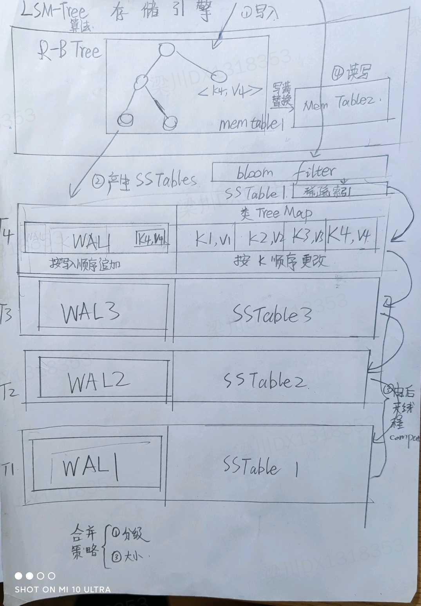
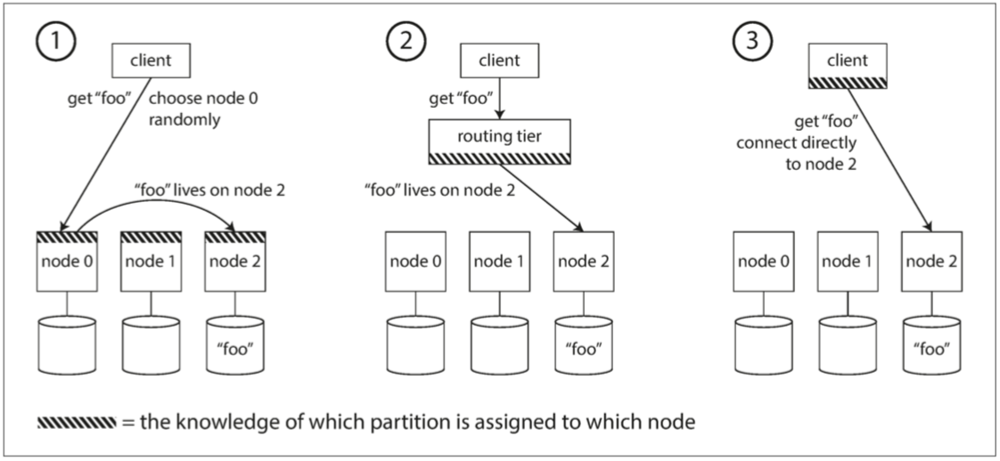

![QRCode]()
数据密集（Data-Intensive）与计算密集（Compute-Intensive）是当今两大负载类型。前者以大数据为代表，后者以深度学习和 HPC 为主要代表。
谨以本书献给那些追逐梦想的人们。
前言
数据密集型应用要处理的瓶颈往往是数据的规模、数据的复杂度和数据产生与变化的速率；与之对应的是计算密集型应用，CPU 往往成为其瓶颈。
本书是关于数据处理系统及其相关技术的（NoSQL、消息队列、缓存、搜索引擎、批处理和流处理框架）。
每一种技术都基于一定的设计理念，而且只适用于特定的场景。
不要过度优化。
可靠、可扩展与可维护的应用系统
现在的典型系统架构已经很明确了，因为业界已经有成功的案例，对这些组件做了很好的抽象，我们只要做好拿来主义就行了。
可靠性（Reliability）
fault tolerance 和 resilience 是系统的容错的体现。
硬件故障
对于大型 IDC，即使磁盘的 MTTF 很高，磁盘数量大了以后，每天发生磁盘损坏也是正常的事情。
硬件容错的方案是制造冗余（冗余磁盘、冗余电源）。
软件容错是第二种方式。
软件错误
软件错误可以被认为是 bug。检查 bug 的方法就是不断地做契约检查、测试。
人为失误
运维错误是系统下线的首要原因。
常见的做法有：
- 以最小出错的方式来设计系统。
- 想办法分离最容易出错的地方、容易引发故障的接口。
- 充分的测试。
- 当出现人为错误时、提供快速恢复机制。
- 设置详细而清晰的监控子系统，包括性能指标和错误率。
- 推行管理流程并加以培训。
可扩展性（ Scalability）
如果系统以某种方式增长，我们应对增长的措施有哪些。
描述负载
Twitter 的例子
Twitter 的高扇出（fan-out）的结构：
2011 年时：
- 用户发送 tweet 可以 达到 12k request/sec
- 用户有 300 k request/sec 的 home timeline 的读请求
用户有不同的扇出结构，决定了他们的潜在写放大的系数。
对于 home timeline 的读，有两种方式可以获取所有内容：
- lazy 方案
这个方案是基础方案，基于 MySQL 的联表查询。
每次每个 follower 读取自己的 home timeline 时，首先 join 自己的 follows 表里的 followee（通过 user_id = follower_id），然后用 followee 去 join user 表（ 通过 followee_id = user_id 这一步其实可以省略），然后用 user 表去 join tweets（通过 user_id = sender_id）。
这种 join 方法可以通过 server side join 来优化，但本质上还是逐步联表。每次做联表查询的时候 join 一次。
如果有必要，这里还可以把 join 的结果缓存起来优化频繁刷新的场景。
这种方法的缺点是，读取大量数据时老老实实地联表查询过多，性能不好。
- eager 方案
这个方案是性能优化方案，基于动态创建的广播队列。
每次每个 followee 发送 tweet 时，会先插入数据到 tweet 表里，然后通过广播的方式把这个 tweet 插入到每个 follower 的一个总的 tweets 列表里。这个列表可以是数据库，也可以是缓存的 list，也可以是 mq 的 topic。因为 mq 的 topic 不适合多对多的生产者和消费者的映射关系，而且动态创建 topic 的成本也很高。缓存的 list（如 redis 的 list）的创建销毁成本很低，很适合这种场景。
这种方案的优点是比方案 1 性能高两个数量级，缺点是如果 fan-out 很大的话，广播的时间会非常长。
因此 Twitter 最后的解决方案是先对大多数 followee 的 tweets 采用方案 2，而对于 fanout 特别多的 followee 的 tweets 使用方案 1，用户最终看到的内容，始终是方案 2 和方案 1 延迟合并的结果。
这个例子可以应用在非常多的 OLAP 场景内：即对于大数据量的数据汇总查询，我们可以优先采取 eager write 或者 broadcast 的方法在写事务的时候插入汇总数据；然后对于 fan-out 特别高的数据，在查询的时候 lazy 查询。选择方案时，需要考虑的因素主要是写成本比较高，还是读成本比较高。如果全量写的不会被全量读，而写成本很高的话，不如用 lazy read ；如果读的场景很高，联表查询出现的比例很高，则适合 eager write。
描述性能
批处理系统更看重吞吐量，即每秒处理的记录数；而在线系统更看重响应时间，即客户端从发送请求到接收响应之间的时间差（response time = server side latency + communication overhead）。响应时间不是一个固定的数字，而是一个可度量的数字分布。
我们可以用平均值来说明一些问题，但更多的情况下关注分布，我们使用百分位数（percentile），如 p50、p90、p95、p99。亚马逊使用 p999 来定义起内部服务的响应时间标准。
定义 SLA 有助于我们确定我们的标准，我们要为最慢的响应（tail latencies 长尾效应）优化到什么地步（百分位越高，越难优化）。
排队延迟往往在百分数响应时间中影响很大。因为服务器并行处理的请求优先，正在处理的少数请求可能阻挡后续的请求。这被称为队头阻塞。做负载测试的时候不要等待队头阻塞（无意中缩短队列长度），要尽可能多地发送请求。
实践中，总是会使用滑动窗口来持续监控性能变化。
在实践之中，最慢的响应，决定了用户的 RT。
针对特定级别负载设计的架构不太可能应付超出预设目标 10 倍的实际负载-引入 APM 监控非常重要。
在多台机器上分配负载被称为无共享架构。这种架构易于水平扩展。如果服务负载高度不可预测，则引入自动的弹性扩展是好的，否则手动扩展更能处理意外情况。
超大规模的系统往往针对特定应用而高度定制，很难有一种通用架构。背后取舍的因素很多，如数据读写量、复杂程度、存储量，响应时间要求。
对特定应用而言，通常我们要做出某些假设（在可用性、一致性上做假设，如单元化场景下的弱一致性假设），有所取舍，才能在我们需要获得进展的方面取得结果-我们应该只优化最频繁的操作，或其他亟需我们优化的操作。
可扩展架构通常是从通用模块逐步构建而来，背后往往有规律可循。本书将讨论通用模块和常见模式。
可维护性
软件的成本在于整个生命周期内持续的维护。而遗留系统总有其过期的原因，很难给出通用的优化建议。
可维护性可以被分为三个方面：
- 可运维性：运维/运营/SRE 团队易于保持系统平稳。
- 简单性：新的工程师能够轻松理解系统。
- 可演化性：能够轻松对系统改进
可运维性
运维团队可能有很多操作，数据系统设计可以提供如下便利：
- Observability
- 文档
简单性
大泥球应用除了功能以外，还提供很多额外意外的复杂性。这种意外的复杂性是可以消除的-而不必减少功能。
消除复杂性最好的手段之一就是抽象。抽象可以隐藏大量的细节，而且可以对外提供干净、易懂的接口。
可演化性
易于修改的系统，易于演化。我们总是处在不断变化的需求中。
数据模型与查询语言
语言的边界就是世界的边界。-《逻辑哲学论》
大多数程序都是通过一层一层叠加数据模型的方式来构建的（如网络协议中不同层使用不同的包）。
不同的数据模型支持的操作不一样，有的操作很好，有的操作很不好-数据结构决定算法，数据结构加算法等于程序。精通一种数据模型需要很大功夫。
关系模型与文档模型
历史
Edgar Codd关系型数据库的核心用例最初是商业数据处理，曾经出现过网络模型和层次模型等不同的范式作为竞争对手，但最终关系模型成为最终的赢家。
在关系模型里，relation 最终被当作表，行即元组。
NoSQL 是关系模型的有力竞争者，最初出现在 Twitter tag 里。它用 schemaless 换取了表达能力的提升，sharding 和 replica 换取了 scalability 的提升。
NoSQL 对 OO 的编程语言的适配性更好。
Linkedin profile 的例子告诉我们，education 和 position 对 user 而言是多对一的关系，可以建模为单独的行，也可以建模为嵌套的文档-因此可以使用 json document 来标表示（这可以转化为 json tree），也可以用关系型数据库的 xml/json 类型来表达。但行业、地区等全局的常量数据，则比较适合用单独的表来存放，使用 id 来引用，而严重不适合冗余存放。
不变的业务 fk、物理 fk 适合冗余，而时间/状态则不适合冗余。冗余可以减少联表查询的复杂度，但也会增加 update 的难度。
IBM 的 IMS 是最初的层次模型，可以很好地处理一对多问题，但不能很好地处理多对多问题-这种困境近似于现在文档数据库遇到的困境。
网络模型的代表是 CODASYL。在 CODASYL 里面每层有多个父节点，因此实现了多对多。在这种模型里，外键是指针，指针不是外键。这种模型按照路径遍历非常麻烦，更新也非常麻烦。
而使用了关系型数据库后，查询优化器会根据索引和表间关系，来生成“访问路径”-也就是执行计划。查询优化器是是一个被持续优化的怪兽。
文档数据库是某种意义上的层次模型-父文档保存了子文档。
文档型数据库的优点：性能更好，模型更像是程序自己的数据结构，适合一对多模型。
关系型数据库则强在 join、多对一和多对多的表达上。但，只要文档数据库可以通过标识符来引用其他文档，则文档数据库的表达能力并没有因而减弱。
如果原始数据有类似树型/层次/文档的复合结构，则比较适合使用文档数据库；否则应该对数据进行分解（规范化），得到关系型数据库的表。
通常，关系型表的数据结构相关的代码是更复杂的。但，如果需要引用嵌套的数据，则嵌套层次越深，文档型模型越不好用。
通常情况下，流式/批处理框架/消息队列里的 event，也适于使用文档数据库。事实上，除了订单系统里的订单/子订单以外，应该大量数据模型都可以放进文档型数据库里。
如果确实需要 join，则文档数据库的弊端就出现了。反范式化很难维护一致性，而且程序的流程会变复杂，流程变差了。
总而言之，关联性越高和数据库选型的关系是：文档型 -> 关系型 -> 图 数据库。
模式灵活性
应该说，文档型数据库有模式灵活性，它支持读时模式（与之相对地，关系型数据库支持的是写时模式）。文档型数据库往往不在写时执行强制模式校验，读时的兼容性必须由读时的应用程序来保证。
关系型数据库因为执行写时校验，所以出现模式变更时，往往需要成本很高的 migrate 操作。
如果外部模式很多，或者模式很易变-最典型的例子，配置型数据，则很适合使用文档型数据库；反之，关系型数据库则要被派上用场。模式的损害在于，它不易于变动。
数据局部性与性能
文档型数据库还有一个缺点，就是对它更新，需要原地重写，写的开销很大，可能引起存储问题。
融合的趋势
关系型数据库和文档数据库的融合是大势所趋。当代的 RDBMS 已经可以很好地处理 XML；而一部分的文档型数据库则可以在查询时支持 join（mongo 是在 client 端支持的，这种方案性能不够好，但支持也比不支持强）。
数据查询语言
数据库里的查询语言
SQL 其实是种声明式查询语言，而 CODASYL 实际上是命令式。
命令式的查询语言，会把查询过程 HOW 写出来（所以我们经常做的客户端查询，都是命令式的查询），告诉计算机，要按照怎样的特定顺序，执行某些操作（第三步可以被扩展，扩展为 map reduce 的不断串联/并联执行）。
而声明式的查询语言，只会把 what 写出来（LINQ 最为明显），指定查询哪些模式，满足哪些条件，需要做怎样的数据处理/聚合。剩下的查询过程，由查询优化器来推导。
声明式的语言都有一个特性，就是无法/也不需要指定执行的流程的细节，这给了编译器/运行时重排执行流程，甚至并行化执行的机会。-声明式其实是一种高级抽象，能够实现复杂查询流程的数据库，才能提供很漂亮的声明式查询语言，这体现了架构设计的一种取舍。
MongoDB 里面的 AST 式的查询语言，本身只是重新发明了一遍 SQL 罢了。
web 领域的查询语言
即使只在 Web 领域，CSS 代表的声明式语言，也比 JavaScript 代表的命令式查询要优雅很多。
MapReduce 查询
MapReduce 起源于谷歌，MongoDB 和 couchDB 等文档型数据库也部分支持 MapReduce。
map 是函数式编程里的 collect，而 reduce 则是 fold 或者 inject。
MapReduce 不是声明式查询语言，也不是一个完全命令式的查询 API，而是介于两者之间：查询（及处理）的逻辑用代码片段来表示，这些代码片段会被框架来重用（代码片段的设计思路，也被用于 Stream 这项新兴技术中）。通常我们使用 map 来生成逻辑 KV，然后用 reduce 对相同的 Key 的 value 进行聚合处理。
map reduce 我们使用纯函数，因为没有副作用，所以纯函数的顺序和执行为之是非常自由的。
MapReduce 实际上是一种偏底层的编程模型，需要执行在计算集群上（否则性能并不好）。SQL 是极高层的计算模型，可以通过 MapReduce 来间接实现。当然，这两者之间并不必然有关系。
图计算模型
多对多模型是不同数据模型之间的重要区别特征。关系型数据库只适合处理简单的多对多关系，复杂的多对多关系需要使用图模型。
图包括顶点和边，常见的图有：
- 社交网络
- Web 图
- 公路或铁路网
图的强大之处在于，它不仅可以存储同构数据，它提供了单个数据存储区中保存完全不同类型对象的一致性方式。
有多种不同但相关的方法可以构建和查询图中的数据，常见的图有属性图（property graph）和三元存储模型（triple-store），相关的查询语言有三种：Cypher、SPARQL 和 Datalog。
图计算模型比关系型数据库或者 CODASYL 更加自由，不需要指定 schema，而任何顶点都可以和其他顶点互联。
属性图
在属性图中，每个顶点包括：
- 唯一的标识符
- 出边的集合
- 入边的集合
- 属性的集合（键-值对）
每个边包括：
- 唯一的标识符
- 边开始的顶点（尾部的顶点）
- 边结束的顶点（头部的顶点）
- 描述两个顶点间关系类型的标签
- 属性的集合（键-值对）
把这两种定义转化为 SQL，可以得到两张表：顶点表和边表。
1 | -- 顶点表 |
关于图模型还有一些值得注意的地方：
- 任何顶点都可以连接到其他顶点。没有模式限制哪种事务可以或者不可以关联。
- 给定某个顶点，可以高效地得到它的所有入边和出边，从而遍历图，即沿着这些顶点链条一直向前或者向后。
- 通过对不同的类型的关系使用不同的标签，可以在单个图中存储多种不同类型的信息，同时仍然保持整洁的数据类型。-传统的关系模型难以表达不同国家的不同地区结构和颗粒度。
图是易于演化的，可以动态地往图里添加功能，图可以很容易适应并扩展。
图是一种前程远大，应用场景广泛的技术。
Cypher 查询语言
Neo4j 是从黑客帝国里诞生的概念，Cypher 是另一个（和密码学里的 Cypher 恰巧同名），这两个名词都是从人名里诞生的。
我们可以先创建库和数据：
1 | CREATE |
相应的查询语句是这样的：
1 | MATCH |
这里的式子分两层：第一层在右边，表明这是任意一个处于特定地点的地点，而第二层在左边，表明这是和第一层变量相关联的顶点。person 是一个待求值的变量。
遍历有两种基本思路：
- 从每个 person 开始，沿着出边过滤。
- 从 us 和 eu 这两个顶点开始，沿着入边过滤。
使用声明式的查询语句，可以让查询优化器自由地决定执行策略。
同样地，我们可以用关系型数据库来表达图数据库。但通常， SQL 查询要求我们能够制定 join 的次序和数量；对于图查询，join 操作的数量不是预先确定的。这种不能确定 join 顺序和次数的查询，容易诱发 SQL 的反模式。
WITHIN*o.. 的意思是，沿着 WITHIN 边，遍历 0 次或多次。
在 SQL 1999 中，查询这种可变的遍历路径，可以使用被称为递归公用表表达式（即 WITH_RECURSIVE 语法）来表示。
1 | -- head vertex 的意思是箭头，这个算法就是递归地从右向左找点（每找到一个点都把点添加进点集合里），而箭头本身带有 withhin 标签。 |
从这个例子可以看出来，SQL 不如 Cypher，SQL 不具备找到一行记录后自递归的方法。
三元存储与 SPARQL
三元存储模型几乎等同于属性图模型，他们只是用不同的名词来描述了相同的思想。
在三元组中，所有信息都以非常简单的三部分形式存储（主语，谓语，客体）。
- 三元组里主体相当于顶点，谓语和宾语相当于 proerpties 中的 key 和 value。
- 三元组中的主体相当于顶点，谓语是途中的边，客体是头部顶点。
语义网
Datomic 是一个三元组存储（其实是五元组，带有 2 元版本数据）。语义网（Semantic Network）不是三元组，语义网本身没有靠谱的实现，从未实际出现。
SPARQL
SPARQL（音“sparkle”）出现得比 Cypher 早，Cypher 的模式匹配是借用 SPARQL 的。
Datalog 出现得更早
Datalog 出现得更早，为 Cypher 和 SPARQL 奠定了基础。它是 Datomic 的查询语言。Datalog 是 Prolog 的一些子集。
小结
数据的模型发展的脉络，不过是：
树型 -> 文档 -> 关系模型 -> 图
关联越多，越适合使用后面的数据库。关系模型的平衡性最好，可以模拟其他数据模型。从这个顺序来讲，文档模型是关系模型在复杂性上的退化/或者简化。但唯有关系模型是强制使用模式的。
如果需求不断变化，模式可能不断变化，应该尽量选择无模式的数据模型。
每种模型都有自己的查询语言和框架。
这些模型在实现的时候，需要做一些权衡取舍。
数据存储和检索
从最基本的层面看，数据库只做两件事情：向它插入数据时，它就保存数据；之后查询时，它应该返回那些数据。
作为应用开发人员，我们大多数情况下不可能从头开始实现一个自己的存储引擎，往往需要从现存的存储引擎中选择一个适合自己的。其他针对事务型工作负载和针对分析型工作负载的存储引擎存在很大的差异。
我们将研究关系型数据库和 NoSQL 数据库，我们将研究两个存储引擎家族，即日志结构的存储引擎和面向页的存储引擎，比如 B-tree（B-tree 是页的组织）。
数据库核心：数据结构
数据存储里通常有三种数据结构：日志、页和索引。
日志
许多数据库内部都使用日志，日志是一种只支持追加式更新的数据文件。一个数据库还要处理其他问题：并发控制、回收磁盘空间、错误处理和部分完成写记录等。但日志始终是一个很有用的机制，被用在很多地方。
索引
在日志里面查找结果是不好的，所以引入第二种数据结构-索引。
索引的基本设计思想是，在原始数据上派生额外数据结构，在索引上保留关键数据或者元数据，作为路标，帮助定位想要的数据。
不同的索引支持不同的搜索方式。
索引必然导致写性能下降，因为索引很难使用追加写，但追加写是性能最高的写入方式。
哈希索引
KV 结构随处可见，是构造更多更复杂索引的基础构造块。如，继承/封装 hashmap 是常见的存储方法。
一个特别简单粗暴的例子：Bitcask 的存储格式，使用 csv 来存储 kv 值，使用 hashmap 来存储 key 和文件系统里的 offset 来充当索引。
我们不能只依赖于一个数据文件，这会导致磁盘空间耗尽-所以我们对大规模存储应该采取分段的形式。
但使用多段数据，往往意味着数据需要压缩。压缩可以让段变小，因为段被合并后就不会再被修改，所以很适合放进新文件里。这样可以把旧文件段留出来，提供读写支持。
每个段都有自己的内存哈希表。-这里引出了一个范式，一段数据，到底在内存里是怎么被组织的，在硬盘里又是怎么被组织的，可以完全不一样。
这个方法是最简单的方法。但要在实践中行之有效，还要考虑如下问题：
- 文件格式：CSV 不是最佳的文件格式，二进制才是。
- 删除记录：如果要删除键和值，在日志里追加一个删除日志是简单的做法（墓碑）。墓碑会让记录在被合并时删除键值的实际内容。
- 崩溃恢复：从头到尾读取日志是一个方法，快照内存里的 hashmap 是另一个方法-这和 RDB/AOF 的设计思想是很像的，快照可以加速崩溃恢复，快照本身就是 compaction 过的值。
- 部分写入的记录：文件要加上校验和。
- 并发控制：只有一个写线程追加写入（类似 log4j 的设计），多个线程并发读-单线程后台消费是一种解决并发问题的基本思路。
为什么要使用追加写，而不是原地更新？这应该是几乎所有的存储使用日志配合数据页的解决方案需要回答的问题。
- 追加写的顺序写性能好。
- 顺序写的并发控制和崩溃恢复会简单得多-只有一个数据文件很难处理脏数据和正确的数据。
- 有了文件合并，可以减少数据文件本身的碎片程度-所以数据文件本身还是 要紧凑，不能作为写的中间文件。
内存里的 hash 表有什么缺点？
- （因为装填因子的存在）内存利用率不高。
- 区间查询效率不高。
SSTables 和 LSM-Tree
SSTables 是排序字符串表，以它优化 Bitcask 的例子的话，会产生如下变化：
- 每个的日志段里只能存在一个 kv 值，不按照它们的写入顺序排序，而按照 key 的字典序排序，每个 key 只出现一次（这就像 TreeMap 了）。
- 段按照特定的时间段顺序排序，这也就意味着 compaction 多个段的时候，可以按照时间的顺序读取同一个 key，只保留某个 key 的最新值，丢弃其他段里的其他值。
- 在内存里保存的索引不需要指向所有的 key value 值，只要能够找到特定的段上的区间起止值，就可以找到特定的段上的最新的 kv，这样我们可以得到一个稀疏的索引。
- 我们的值写入永远都是随机写入的，相关的存储引擎是这样工作的：
- 写入先写入内存中的平衡数据结构（通常是某种平衡树，如红黑树），这被叫作内存表（Mem table）。
- 当内存表的大小达到某个阈值以后，将其生成一个 SSTable 写入磁盘中，然后再生成下一个内存表继续供写入（这应该是一个原子切换）。
- 如果有读操作，先在内存表里查找，然后按照写顺序查找最新的磁盘段文件、次新的磁盘段文件，以此类推，直到找到目标（或为空）。
- 后台周期性地执行段合并与压缩过程，以合并多个段文件并丢弃那些已被覆盖或者删除的值。
- 为了防止数据库崩溃，也要准备 WAL。WAL 使用纯粹的追加写，而不是排序写（这样的性能最好）。一段日志对应一段 WAL。
上述算法实质上是 LevelDB（Riak）和 RocksDB �所使用的，可以嵌入其它程序中提供 KV 存储。这两个引擎都收到 Google 的 BigTable 论文的影响（它引入了 SSTable 和 Mem table 两个术语）。
这种索引结构由 LSM-Tree 命名（这一章可能总体上被称作 LSM-Tree 算法）。Lucene 也使用类似的方案存储 term 和相关的 doc。
总有很多细节，值得深入优化。如果有个 Key 找不到，则 LSM-Tree 算法的表现可能很慢。这样可以引入布隆过滤器，近似计算集合的内容。
还有其他的策略可以影响甚至决定 SSTables 压缩和合并时的具体顺序和时机。最常见的方式是大小分级和分层压缩。分层压缩是 LevelDB 和 RocksDB 使用的策略，HBase 使用大小分级，Cassandra 同时支持这两种压缩。
在大小压缩中，较新的和较小的 SSTables 被连续合并到较旧和较大的 SSTables 里。
在分层压缩中，键的范围分裂成多个更小的 SSTables，旧数据被移动到单独的“层级”，这样压缩可以逐步并行并节省磁盘空间。
LSM 的基本思想（保存在后台合并的一系列 SSTable）足够简单有效。即使数据集远远大于可用内存，它仍然能够正常工作。由于磁盘是顺序写入的，LSM-Tree 可以支持非常高的写入吞吐量。

（要实现上面的结构，要特别考虑各种写操作的并发安全性，高性能还在其次）。
B-tree
log-structure 日志索引结构正在逐渐受到更多的认可，但目前最广泛使用的索引结构是 B-tree。
从 1970 诞生以来，B-tree 经历了长久的时间的考验，时至今日，它仍然是几乎所有关系型数据库中的标准索引实现。
B-tree 也按 Key 对键值对排序（证明这个特性极端重要，对于存储而言，区间查找的重要性超乎想象地有用，这也是为什么 hash 类的存储结构使用场景不广泛的原因）。
B-tree 首先把数据库分解成固定大小的块和页（因为操作系统通常使用块作为名称，所以数据库经常使用页），这样更接近底层硬件的设计。页是内部读写的最小单元。
每个页面都有自己的地址。

B-tree 中一个页所包含的子页引用数量称为分支因子（branching factor）。这种设计使得 B-tree 在 O(logn) 的深度上保持平衡。（如果 使用 B+ 树）一个分支因子为 500（通常应该为几百）的 4kb 页只要 4 层就能够存储 256tb 左右的数据。
如何使 B-tree 更可靠？
对 B-tree 的底层写操作基本上是使用新数据来代替磁盘上的旧页，（通常）这不会改变该页的磁盘存储位置。这与 LSM-tree 形成鲜明的对比，后者只是追加写（实际上在 SSTable 内部还是排序更新文件，但总体上是追加写），新旧替换的操作发生在后台线程的 compaction 里。
为了做崩溃恢复，B-tree 当然还是需要引入 WAL（而且 WAL 也会进化，从 binlog 进化到 redo log）。
如果要原地更新数据页，还要考虑并发控制问题，所以需要考虑锁存器（一种轻量级锁）；相比之下，日志结构化的方法先显得更简单了，因为它的实际原地更新是在后台发生的。
如何优化 B-tree？
- 引入 COW，SNAPSHOT Isolation。
- 保存 key 的缩略信息，节省页空间，这样树具有更高的分支因子，从而减少层数（这就引入了 B+ 树）。
- 尽量让相邻的页在磁盘上尽量连续。
- 在叶子上添加额外的指针，这样寻找兄弟不需要找 parent（这也是 B+树的特性）。
- 分形树引入了一些 log-structure 来减少磁盘寻道。
对比 B-tree 和 LSM-tree
LSM-tree 的优点是什么？
通常认为，LSM-tree 对写入更快，而 B-tree 对读写更快。当然，真正的性能表现只能选取特定的 workload 进行负载测试才能看出来。
磁盘的总带宽是有限的，SSD 的可擦除写的次数是有限的，所以日志结构的写入可能带来的写放大值得关注，至少 compaction 可能降低初始写入的性能。
因为 compaction 的存在，所以 LSM-tree 的的碎片比 B-tree 要少，所以磁盘上的文件通常要更小。这个结论未必对，因为 LSM-tree 里面是存在重复的键值对的，B-tree 没有这种重复的成本。
LSM-tree 的缺点是什么？
compaction 会影响正在进行的读写操作。如果初始写入吞吐量很高，则压缩可能不能真正匹配上它的写入速率。
通常我们不能限制初始写入的速率。
因为多副本的存在，LSM-tree 不具备 B-tree 能够简单地锁住记录而提供事务功能的优点。
其他索引结构
索引包括：
- 主键索引
- 二级索引：值得关注的是 posting-list，或者追加唯一标识使二级索引成为唯一索引的场景。
B-tree 和 log-structure 都可以拿来实现二级索引（甚至主键索引）。
索引中存储的要么是值，要么是堆文件的位置信息。堆文件才是真正存储数据的地方。
有了堆文件，只是更新值而不变更键，可以触发原地变更，否则需要牵扯到更多的文件修改和指针值修改。
但从索引到堆文件的额外跳转意味着太多的性能损失，所以聚集索引是很重要的。但创造聚集索引的次数是有限的，聚集索引和非聚集索引之间的折中是覆盖索引。覆盖索引只通过索引就可以回答某些简单的查询。
如果要同时查询多个列的信息，需要引入多列索引，但普通的多列索引在处理复杂的二维搜索的时候可能出现索引跳跃的问题：
1 | SELECT * FROM restaurants WHERE latitude > 51.4946 AND latitude < 51.5079 |
这种时候可能需要引入专门的空间索引（SPATIAL index），如 R 树（PostgreSQL 支持 R 树查询）。
如果我们使用模糊索引，可以在某个编辑距离内搜索特定的文本。
我们很多数据结构设计起来都是为了适应磁盘的限制（注意，这里的磁盘和 SSD 是两样东西），比如 B+tree 的深度和链表结构就是为了适应访问文件块的次数和寻道时间。我们之所以使用磁盘，有至少几个原因：
- 磁盘可以持久化数据。
- 磁盘的成本比内存低。
- 磁盘上的文件更加容易使用外部工具运维-因为已经在进程之外了。
但如果没有磁盘的限制，我们可以得到极大的性能提升。这种内存提升不是因为磁盘的性能比较差，而是因为避免了用写磁盘的格式对内存数据结构进行编码的开销。因为只要内存足够大，虚拟内存可以使使用磁盘的存储引擎充分利用内存。但如果可以自由地使用数据结构，像 Redis 一样的方案可以提供很多样的实现。
有一种类似虚拟内存的页内存管理机制的方案，anti-caching。反缓存把足够冷的记录交换出内存，写入磁盘，再需要时再单独取回。这个方案比页式内存管理好的地方是，颗粒度更低，比操作系统管理内存的方案更有效。
如果将来 NVM 技术得到普及，可能还需要进一步改变存储引擎设计。
事务处理与分析处理
事务是在商业数据处理中诞生的，主要指组成一个逻辑单元的一组写操作。广义的事务处理不一定意味着 ACID，只是意味着低延迟的读取和写入。
数据库被广泛用于处理业务交易，也被用于数据分析，这两种模式有显著差异：
- OLTP 基于键处理，每次查询返回少量记录，随机访问，低延迟写入，数据量小。
- OLAP 对大量记录进行汇总（aggregate），通常要搭配 ETL。
这两种模式都需要交互式响应。
SQL 非常灵活，被证明能够同时胜任 OLTP 和 OLAP。但从上世纪 90 年代初期开始了一种趋势，大企业放弃使用 OLTP 系统用于分析目的，儿子单独的数据库上运行分析。这个单独的数据库被称为数据仓库。
数据仓库
企业可能有几十种不同的交易处理系统（Transaction Process System）。这些系统每一个都足够复杂，也每一个都非常重要，数据库管理员往往不愿意让业务分析人员在 OLTP 数据库上直接运行临时分析查询，这些查询代价很高，可能损害并发执行事务的性能。
数据仓库里包含公司所有 OLTP 系统的只读副本，通过 ETL 流程导入数据。
几乎所有的大型企业都有数据仓库，但是在小型企业中却几乎闻所未闻。所以在小公司里，OLTP 和 OLAP 是隔离的。
单独的数据仓库，可以针对分析访问模式进行优化。值得注意的是，本章前半部分讨论的索引算法适合 OLTP，但不擅长应对分析查询。
OLTP 数据库和数据仓库之间的差异
有许多图形化的数据分析工具，它们可以生成 SQL 查询、可视化结果并支持分析师探索数据，例如通过诸如向下钻去、切片和切丁等操作。
数仓和 OLTP 系统的相似之处是：他们都有 SQL 接口。这也可以看出 SQL 作为声明式语言，抽象表达能力之强。
目前市面上有商业数据仓库系统通过商业许可销售系统，也有一些开源的 SQL on hadoop 的解决方案，正在逐渐流行。
星型与雪花型分析模式
不像事务处理领域广泛使用的不同数据模型，数据仓库在分析型业务上相当公式化地使用星型模型，也成为维度建模（dimensional modeling）。
模式的中心是一张事实表，事实被捕获为单独的事件成为事实表中的每一行。因为事实表在中央而维度表在四周，这个模式被称为星型模式。
每一行里都有很多属性，和引用其他维度表的外键。这些维度表通常代表事件的对象（who）、什么（what）、地点（where）、时间（when）、方法（how）以及原因（why）。
星型模式有个变体，其中维度被进一步被细分为子空间-维度表之间还可以再进一步用外键互相引用。雪花模型比星型模型更加规范化了（normalization）。但大多数分析人员，雪花模型比星型模型更简单。星型 -> 雪花
在典型的数据仓库中，表通常非常宽，事实表通常超过 100 列，有时候有几百列。维度表也可能非常宽。
列式存储
如果事实表中有数亿万亿行、PB 大小的数据，则高效地存储和查询这些数据将成为一个具有挑战性的问题。维度表则通常小很多。所以此节中，将主要关注事实表的存储。
虽然事实表通常超过 100 列，但典型的数据仓库查询往往一次只访问其中的 4 或 5 列。
通常，面向行的存储引擎仍然需要（如果不能处理覆盖索引）将所有行都加载进内存中进行加载、解析和过滤。
面向列的存储的想法很简单：不要将一行中的所有值存储在一起，而是将每列中的所有值存储在一起。
面向列的存储布局依赖一组列文件，每个文件以相同顺序保存着数据行-这样实际上会造成存储的稀疏，但制造了存储上的对齐。
列压缩
除了仅从磁盘中加载查询所需的列之外，还可以通过压缩数据进一步降低对磁盘吞吐量的要求。列的值序列有很多重复的话，是压缩的好兆头。在数据仓库中特别有效的一种技术是位图编码（bitmap encoding）。
一列如果有 n 种值，则可以有 n 种位图，每个位图上的一位，代表一行在上面是不是有值。这样重复的字面量存储空间被减少到一个比特。而且可以使用游程编码，对 product_sk in (30, 68, 69)这样的查询，可以对位图进行按位或，然后用求等。
这个设计思想可以总结为：拿可枚举值作为位图数量（横向数据有限），事实数量（纵向数据无限）作为比特。
有一个常见的误解：Cassandra 和 HBase 都源于 BigTable，但它们使用列族，将行主键与列族的列存储在一起，并且不使用列压缩（因为他们不能简单实用位图来节省空间）。所以 BigTable 模型仍然面向行，可以被称作表格型 KV。
内存带宽和矢量化处理
面向列的存储有利于 CPU 利用内存带宽，而且快速矢量化处理。
列存储中的排序
在列存储中，行的存储顺序不重要，最简单的方法是按照插入顺序保存，这样插入一个新行只是追加到每个列文件。
但单独排序某一列没有意义，如果这样的话无法知道列中的某一项具体属于哪一行。如果我们知道某列中的第 k 项一定属于同一行，基于这种约定我们可以重建一行。
相反，即使数据是按列存储的，它也需要一次排序整行。
只要涉及到排序，我们就要考虑排序键。第一个排序键往往是最重要的，我们通常选择的排序键是日期之类的列，这类列 selectivity 最高。这样我们进行范围查找的时候，解空间可以一下子收敛到很小的范围，加快查找的结果。
排序的另一个优点是，他可以帮助进一步压缩列。有大量重复值的列压缩率最好。第一列的压缩率最好，第二第三列的排序键的情况会更复杂。因为它们的值域里面相邻的重复值，可能因为归属于不同的第一键而被切割得七零八落-这就是局部簇聚性的局限了。
排序优先级进一步下降的列基本上会呈现接近随机的顺序，因此通常无法压缩。
几种不同的排序
面向列的存储具有多个排序顺序，这有些类似在面向行的存储汇总具有多个二级索引。但面向行的存储，行的数据只在一处，二级索引里保存的是指向行的指针；对于列存储，通常没有任何指向别处数据的指针，只有包含值的列。拥有多个维度的存储，对保持查询业务的高可用有一定帮助。
列存储的写操作
B-tree 使用原地更新的方式，必然会带来数据页的裂。而列式存储每插入一行就要更新所有列，代价更大，所以选择 LSM-tree 有其必然性。
通常列式存储在内存中使用的数据结构是面向行还是面向列的，无关紧要（这就是为什么可以使用一个 RB-tree 的原因）。
聚合：数据立方体和物化视图
未必每个数据仓库都基于列存储（但数据仓库的事实表如果有几百列，又会倾向于使用列存储）。
我们通常需要使用聚合方法处理原始数据的很多列，每次都重新处理非常浪费时间。所以这诞生了两类解决方案：
- 物化视图：将之前的查询结果缓存在磁盘上。我们常说的数据血缘表即是这种表。
- 虚拟视图：我们常说的 view，编写查询的快捷方式，隐藏了真实的细节，差异化地管控查询的细节- SQL on hadoop 就是为分布式文件系统设计的虚拟视图。
物化视图的写入成本很高，但查询效果很好。所以数据仓库喜欢用物化视图而RDBMS 喜欢使用虚拟视图。
物化视图的一种常见情况被称为数据立方体。
一个二维的数据立方体是这样的：每个事实只包含两个维度表的外键，每个维度是二维矩阵的一个方向，而二维矩阵格子是事实的完整属性。这样，我们可以沿着任意维度应用聚合操作，得到减少一个维度的总和。

注意，这个立方体里有一列专门的聚合列，产生了单一维度的聚合格子（这一列不能存储复合值，它必须从属于这一维度），这个聚合列才是加速的关键。
一般来说，事实表的维度不止五个。我们很难想象五维超立方体是什么样子的。我们可以简单想象一下：
- 数据存放在特定的格子里
- 格子上存储了它拥有的所有维度的外键
- 格子的内容就是维度1-维度2-维度3-…-维度 x 限定的事实属性
数据立方体针对某些查询会非常快，因为她已经被预先计算出来了。但它不能解决非特定维度聚合的问题，所以数据仓库还是必须存储原始数据。
小结
OLTP 面向用户，OLAP 面向业务分析师。
OLTP 方面，有两个流派的存储引擎：
- 日志结构流派，它追加更新，后台合并数据页。
- 原地更新流派（而不是 B-tree 流派），它原地更新数据页。
数据编码与演化
数据编码格式
编码模式要处理模式变化，才能兼容新旧系统和新旧数据。
向后兼容：新代码理解老数据。
向前兼容：老代码理解新数据-这一条比较难做到，类似软分叉。
程序通常使用（至少）两种不同的数据表示形式：
- 在内存中，保存在专门的数据结构中，使用指针优化 cpu 进行高效访问和操作的优化。
- 在传输和存储时，将其编码为某种自包含的字节序列，由于指针对其他进程没有意义，所以这个字节序列看起来与内存中使用的数据结构大不一样。
从 1 到 2 被称为编码，从 2 到 1 被称为解码。
许多编程语言都内置支持将内存中的对象编码为字节序列。但它有种种缺点：
- 不利于异构系统集成
- 容易导致安全问题
- 不利于版本管理（进而处理向前兼容和向后兼容）
- 效率不高
因此我们产生了一些流行的格式，Json、XML 与二进制变体。这些格式处理数字、模式、二进制数据都有一些小小的问题。
明文是前后兼容性最好的格式，也是最不紧凑的格式。所以越是大数据量的场合，越要发明一些新颖的格式来解决容量问题。
数据流格式
进程内通信是共享内存的通信；进程间通信是基于字节序列的数据编码通信。我们编写程序时进行函数间调用，就是进程内通信；我们编写 API 进行服务间通信，就是进程间通信。
基于数据库的数据流
基于数据库的数据流要注意模式演化和兼容性问题。
基于服务的数据流：REST 和 PRC
服务器公开的 API 被称为服务，API 通常包括一组标准的协议和数据格式。Web 浏览器、服务器和网站作者都同意这些标准，所以可以使用任何浏览器访问任何网页。
Web 浏览器不是唯一的客户端，移动设备或者桌面计算机上的应用程序也可以向服务器发出网络请求。
此外，服务器本身也可以成为另一项服务的客户端。这种方法可以用于将大型应用程序按照功能区域分解为较小的服务，服务之间通过请求传递数据。这种构建应用程序的方式被称为 SOA 或者微服务架构。
SOA/微服务体系结构的一个关键设计目标是，通过使服务可独立部署和演化，让程序更易于更改和维护。
网络服务
当 HTTP 被用作与服务通信的底层协议时，它被称作 Web 服务。
REST 不是一种协议，而是一种基于 HTTP 原则的设计理念。它强调：
- 简单的数据格式
- 使用 URL 来标识资源
- 并且使用 HTTP 功能进行缓存控制、身份验证和内容类型协商
REST 在微服务架构非常受欢迎。
相比之下，SOAP 是基于 XML 的协议，虽然它最常用于 HTTP，但其设计目的是独立于 HTTP，并避免使用大多数 HTTP 的功能。SOAP 相关的复杂框架通常是 Web Service Framework，被称为 WS-*。因此它的 API 通常使用 WSDL 来生成代码，使用本地类和方法调用来访问远程服务。
SOAP 过于复杂，对于没有 SOAP 供应商支持的编程语言的用户来说，试图与 SOAP 服务集成非常困难。
远程过程调用（RPC）的问题
EJB、RMI、DCOM 和 CORBA，各有其局限性。
RPC 思想试图使向远程网络服务发出请求看起来与在同一进程中调用编程语言中的函数或方法相同（这种抽象被称作位置透明）。这种方法有根本的缺陷（我们无法克服这些分布式计算与生俱来的缺陷），网络请求与本地函数调用非常不同：
- 本地函数调用是可预测的，并且成功或失败仅取决于控制的参数。而网络请求不可预测，因此必须有所准备，重试所有的请求。
- 本地函数调用要么返回一个结果，要么抛出一个异常，或者永远不会返回（因为无限循环或进程崩溃）。网络请求返回时可能没有结果。
- 如果重试失败的网络请求，可能会发生请求实际上已完成，只是响应丢失的情况，这又要求我们建立重复数据消除（幂等性）机制。
- 调用本地函数的时间大致相同，而网络请求的耗时则不同。
- 调用本地函数有时候只要传输指针就行（有时候传递数据，或者说，针对复杂数据量传递指针，简单数据传递数据），而远程请求则必须全部传递数据。
- 客户端和服务端可能用不同编程语言来实现，所以 RPC 框架必须处理数据类型转换的问题。
RPC 的发展方向
RPC 的性能会更好，但 RESTful API 还有其他一些显著的优点：它有利于实验和调试，支持所有的主流编程语言和平台，并且有一个庞大的工具生态系统。
RPC 的数据编码和演化
如果 RPC 经常要用于跨组织边界的通信，维护服务的兼容性会变得更加困难。服务的提供者无法控制其客户，也不能强制他们升级。
管理 API 版本的方法有：
- 在 URL 或 HTTP Accept 头中使用版本号
- 使用 API 密钥来标识特定客户端的服务
- 使用单独的管理接口来更新 API 版本的选项
基于消息传递的数据流
消息是介于 RPC 和数据库之间的异步消息传递系统。客户端的请求通过低延迟传递到另一个进程中。
与 RPC 相比，消息传递有几个优点：
- 消息代理可以充当缓冲区
- 它可以自动将消息重新发送到崩溃的进程，从而防止消息丢失
- 它避免了发送方需要知道接收方的IP 地址和端口号
- 它支持将一条消息发送给多个接收方
- 它在逻辑上将发送方与接收方分离
与 RPC 的差异在于，消息传递通信通常是单向的。
消息代理
有一类的消息队列，有请求队列，也有回复队列。
分布式 Actor 框架
Actor 模型是被用于单个进程内并发的编程模型。逻辑被封装在 Actor 中，而不是直接处理线程。
每个 Actor 通常代表一个客户端或实体，它可能有某些本地状态（不与其他 Actor 共享），并且它通过发送和接收异步消息与其他 Actor 通信。不保证消息传送：在某些错误情况下，消息将丢失。由于每个 actor 一次只处理一条消息，因此不需要担心线程，每个 Actor 都可以由框架独立调度。虽然很相似，但 Goroutine 不同于 Actor，它是 CSP 模型。Actor 和线程也不一样，Actor 使用自己的时间片，而不是调用方的时间片。
在分布式 Actor 框架中，这个编程模型被用来跨越多个节点来扩展应用程序。
分布式 Actor 框架实质上是将消息代理和 Actor 编程模型集成到单个框架中。
Actor 可以很好地支持滚动更新。
小结
预祝你的应用程序可以快速迭代，顺利部署。
分布式数据系统
主要出于以下目的，我们需要在多台机器上分布数据：
- 扩展性
- 容错与高可用性
- 延迟考虑
系统扩展能力
我们经常可以拿来垂直扩展的系统，由一个操作系统管理更多的 CPU，内存和磁盘，通过高速内部总线使每个 CPU 都可以访问所有的存储器或磁盘。这种架构被称作共享内存架构（shared memory architecture）。
共享内存架构只能提供有限的容错能力。
另一种方法是共享磁盘架构（shared disk architecture），它拥有多台服务器，每个服务器有个字独立的 cpu，然后将数据存储在可共享访问的磁盘阵列上，服务器和磁盘阵列之间往往通过高速网络连接。
无共享架构
采用这种架构（shared nothing）时，运行数据库软件的机器或者虚拟机称为节点。每个节点使用本地的 CPU、内存和磁盘。
本部分将重点放在无共享体系架构上，并不是因为它一定是所有应用的最佳选择，而是因为它需要应用开发者更多的关注和深入理解。例如把数据分布在多节点上，就需要了解在这样一个分布式系统下，背后的权衡设计和隐含限制，数据库并不能魔法般地把所有复杂性都屏蔽起来。
（我们经常做的无状态服务搭配数据库的架构模式是近于共享磁盘架构的，而我们的单元化架构模式是近于无共享架构的。）
复制与分区
将数据分布在多个节点上有两种常见方式：复制和分区。
在了解以上概念之后，我们会讨论分布式环境中错综复杂的权衡之道，很可能我们在设计系统时不得不面对这些艰难选择（没有做过艰难选择，不能算是解决过很难的问题）。
数据复制
数据复制是指通过互联网络在多台机器上保存相同数据的副本。它有几个好处：
- 使数据更接近用户
- 提高冗余
- 读扩展（冗余提供了超量部署，读扩展也降低了延迟，负载和）
- 如果复制的数据一成不变，那么复制就非常容易：只需将数据复制到每个节点，一次即可搞定。然而所有的技术挑战都在于处理那些持续更改的数据。
目前流行的复制数据变化的方法有：
- 主从复制
- 多主节点复制
- 无节点复制
复制技术存在许多需要折中考虑的地方，比如采取同步复制还是异步复制，以及如何处理失败的副本。
数据库复制是个很古老的话题，因为网络的基本约束条件，自始至终没有发生过本质的变化（计算机发展的早期就已经摸清楚了这些基本问题，而且推导出了问题的基本解法）。
实践中大多数开发人员仍然假定数据库只运行在单节点上，分布式数据库成为主流也是最近发生的事情（长久以来 MySQL 始终是个非分布式数据库，所以才有各种中间件方案）。
许多应用开发人员在这方面经验还略显不足，对诸如“最终一致性”等问题存在一些误解。因此，在“复制滞后问题”中，我们会详细讨论最终一致性，包括读自己的写和单调读。
主节点和从节点
每个保存数据库完整数据集的节点称之为副本。当有了多副本，不可避免地会引入一个问题：如何确保所有副本之间的数据是一致的？
- 指定某一个副本为主副本（或称为主节点）。当客户写数据库时，必须将写请求首先发送给主副本，主副本首先将新数据写入本地存储。
- 其他副本则全部称为从副本（或称为从节点）。
同步复制与异步复制

上图的第一个节点显示了同步复制的工作流程，第二个节点显示了异步复制的工作流程。
同步的优点是，如果用户收到看 OK，则所有从节点 OK 了。同步复制的缺点是，如果有从节点阻塞，所有写入都会被阻塞（主从延迟是很常见的情形，所以同步复制产生的写阻塞会很频繁）。
实践中，如果数据库启用了同步复制，通常意味着其中某一个从节点是同步的，而其他节点则是异步模式。万一同步的从节点变得不可用或性能下降，则将另一个异步的从节点提升为同步模式。这样可以保证至少有两个节点（即主节点和一个同步从节点）拥有最新的数据副本。这种配置有时被称为半同步（这项技术可能是 FaceBook 率先提出的）。
主从复制还可以配置为全异步模式，这样配置性能最高，但可能丢失所有尚未复制到从节点的写请求-这是后面要谈到的“复制滞后问题”的体现。
异步模式看起来不靠谱，但还是被广泛使用，特别是从节点数量巨大或者分布于广域地理环境。
复制涉及的问题非常复杂，多副本一致性和共识问题后续再讨论。链式复制（Chain Replication）能够兼容高吞吐和高可用的场景，已经应用在微软的 Azure 存储中。
配置新的从节点
新增从节点不能使用直接停机拷贝的方式，除非我们的主节点停写，直至拷贝完成。但停写的时间不能太长，否则高可用不能被保证。所以常见的做法是：
- 生成一个一致性快照，MySQL 使用 innodbbackupex。
- 将一致性快照应用（Apply）到从节点上。
- 从节点请求快照点之后发生的数据更改日志。这种日志的快照点位有特别的叫法，PostgreSQL 将其称为“log sequence number”，MySQL 将其称为“binlog coordinates”。
- 获得日志后，从节点来应用这些快找点之后的所有数据变更。
处理节点失效
从节点失效：追赶式恢复
如果发生网络闪断，只要从节点明确知道故障之前处理的最后一笔事务，然后连接到主节点，请求从那笔事务之后中断期间所有的数据变更。
从节点失效：节点失效
节点切换，极度危险！
处理主节点故障的情况则比较棘手：选择某个从节点将其提升至主节点；客户端也需要更新，这样之后的写请求会发送给新的主节点，然后其他从节点要接受新的主节点的变更数据，这一过程称之为切换。
故障切换可以手动执行，也可以自动进行。自动切换的步骤通常如下：
- 确认主节点失效。一般基于超时的心跳机制。
- 选举新节点。一般基于共识算法选举新节点，需要选出和失效的主节点数据差异最小的从节点。
- 重新配置系统使新主节点生效。
在上述切换过程中还充满了各种各样的变数：
- 如果使用了异步的复制，新的主节点未必收到了原主节点的所有数据（任何一种共识算法都解决不了这个问题）。如果这时候新的节点收到了新的冲突的写请求，这时候可能产生脏数据。常见的解决方案（高可用）方法是：新的主节点丢弃未完成复制的请求，但这可能会未被数据更新持久化的承诺。-另一种强一致性的做法是，在新主和老主确认校验一致之前，禁止新节点的写。这种禁止对可用性伤害很高，如果校验长时间无法完成，集群会瘫痪掉。
- 如果在数据库之外有其他系统依赖于数据库的内容并在一起协同使用，丢弃数据的方案就特别危险。所以强一致性的数据（余额、序列号等交易因子业务）不能使用丢弃后写的数据方案。
- 在某些情况下，可能出现两个从节点都认为自己是新主节点，这种情况被称为脑裂。这非常危险，两个主节点都可能接受写请求，并且没有很好地解决冲突的方法（没有办法自动处理，可能需要引入手工处理）。作为一种安全应急方案，有些系统会采取措施来强制关闭其中一个节点。
- 如何设置合适的超时时间来检测主节点失效呢？主节点失效后，超时时间设置得越长也意味着总体恢复时间就越长。但如果超时时间设置得太短，可能导致很多不必要的切换，遇到网络流量暴增可能会让系统频繁切换而崩溃。-超时时间太长或者太短都是陷阱，至少应该让超时时间长于一个应用超时时延的 margin。
复制日志的实现
基于语句的复制
这是最基础的方案。
最简单的情况，主节点记录锁所执行的每个写请求（操作语句）并将该操作作为日志发送给从节点。
区块链就是使用这种方案，但这种方案有诸多限制：
- 限制语句必须是确定性的语句。
- 语句本身不能依赖于本地现有数据（自增列），或者会限制所有语句的执行顺序。这实际上仍然会限制事务的并发执行-只有序列化执行能够无措执行。
- 有副作用的语句。
我们自己做 C/S 类型的数据同步，也可能采取基于语句的复制的方案，如果我们不能解决上面的问题，我们可能会遇到很大的问题。这就看出 Log-Structure 这种设计模式的重要了。
基于预写日志的复制
所有对数据库写入的字节序列都被记入日志，这种日志就是 WAL。WAL 的缺点就是它描述的数据结果非常底层，某些磁盘块里的某些字节发生了改变，会让复制方案和存储引擎紧密耦合。
基于行的逻辑日志复制
另一种方法是复制和存储引擎采用不同的日志格式，这样复制与存储逻辑剥离。这种复制日志称为逻辑日志。
MySQL 的 binlog 是这样工作的：针对一个事务，产生涉及多行的多条日志记录，并在后面跟着一条记录，指出该事务已提交。
（因为 binlog 是逻辑日志，所以它不与存储引擎绑定，是 Server 层日志。 binlog 特别适合用来跨版本复制是它的一个优点，但不适合特种的存储引擎的问题恢复。）
基于触发器的控制
这里的触发器不是数据库内置的 trigger，而是应用层程序。基于应用层的程序比较灵活，也开销更高，而且也更加容易出错。
复制滞后问题（replication lag）
主从复制要求所有的写请求都经过主节点。为了保证主从复制的写吞吐量，所以往往会开启异步复制。只要开启异步复制，都可能产生各种复制滞后，这也就意味着我们必然面对现实中的最终一致性。
读自己的写（read-your-writes）
许多应用让用户提交一些数据，接下来查看他们自己提交的内容。
因为（基于主从的）异步复制的存在，所以可能会有一些用户在提交请求后需要（在副本上）查询自己提交的读。这就需要 read-after-write-consistency。
那么如何保证这种一致性呢？
- 如果用户可能访问会被修改的内容，从主节点读（读主库是一种写后读，如果使用单元化等方案发生主从切换，不能保证写后读一致性，则强一致性无从保证）；否则，在从节点读取。这需要在业务规则上区分，什么样的数据是属于用户自己的某次修改的，什么样的数据是属于别人的修改的。
- 如果大部分的内容可能被大部分用户修改，那么尚书方法将不太有效。如果大部分的数据都需要经由主节点，这就丧失了读操作的扩展性。这时候可以尝试（一个弱时间假设），在更新后一分钟的时间内，读主节点；其他时间读从节点。这就要求：我们的时间假设掐得非常准，也要我们监控那些特别慢的节点。
- 客户端可以记住最近更新时的时间戳，并附在读请求中，据此信息，应用可以确定此时读出的数据是不是足够新。如果不够新，要么交给其他副本读，要么等待直至读到相应时间戳的数据为止。这个时间戳可以是逻辑时间戳（日志序列号），也可以是实际系统时钟。通常采取这种方案的系统要具有“写事件驱动读带有时间戳”的特点。
- 如果副本分布在多数据中心，情况复杂些，必须先把请求路由到主节点所在的数据中心（该数据中心可能离用户很远）。
单调读（monotonic-read）
单调读的定义是，一个用户每次读不应该看到回滚现象。
单调读是一种比强一致性弱，但比最终一致性强的保证。至此四种一致性之间的关系为：强一致性、单调读、最终一致性、（一般）弱一致性。
保证单调读的方法是让用户每次在一个分片上读数据-换言之，使用随机负载均衡的方案配合主从复制的读扩展，没有办法保证单调读。
前缀一致读（consistent prefix reads）
前缀一致读是一种保证，对于一系列按照某个顺序发生的写操作，那么读取这些内容时也会按照当时写入的顺序。
这是分片数据库在多分片写时特有的一个问题。一般情况下，即使以相同的顺序写入数据库，读取也无法保证保证总是看到一致的序列-这和 kafka 多分区无法保证全局有序是一样的。实现前缀一致读的最简单的方法是破坏分区写这个先决条件，保证有因果关系的写入都交给一个分区来完成。
所以全局有序性 = producer’s consistent prefix read + consumer’s monotonic read
如果使用单元化/Set 化方案，只要发生主从切换，则无法保证单调读。
复制滞后的解决方案
使用最终一致性系统时，最好先思考这样的问题：（系统最大的风险是，）如果复制延迟增加到几分钟甚至几小时，那么应用层的行为会是什么样子？
如果需要强一致性设计，需要考虑写后读的一致性（写后读也不是很简单的，这里的写后读专指能读到写的写后读）；如果系统设计时假定是同步复制，但最终它事实上成为了异步复制，就可能会导致灾难性后果。
如果需要做特别的设计，需要在应用层上做，应用层也可以提供更灵活、强力的保障措施；而代价则是，应用层中处理这些代码非常复杂、且容易出错。
如果应用程序开发人员不必担心这么多底层的复制问题，而是假定数据库在做“正确的事情”，情况就变得简单。而这也是事务存在的原因，事务是数据库提供更强保证的一种方式。
在单节点上支持事务已经非常成熟，然而在转向分布式数据库（即支持复制和分区）的过程中，有许多系统却选择放弃支持事务，并生成事务在性能与可用性方便代价过高，然后断言在可扩展的分布式系统中最终的一致性是无法避免的终极选择。关于这样的表述，首先它有一定的道理，但情况远不是它所声称的那么简单。-我们应该跳出一个又一个有过取舍的实现，形成一个一般的、成熟的观点。
多主节点复制
主从复制的方法比较常见。
主从复制存在一个明显的缺点：系统只有一个主节点，而所有写入都必须经由主节点。只要发生单点故障，主从复制就 hi 影响所有的写入操作。
对主从复制模型进行自然的扩展，则可以配置多个主节点，每个主节点都可以接受写操作，后面复制的流程类似：处理写的每个主节点都必须将该数据更改转发到所有其他节点，这就是多主节点复制。
多主复制的好处是：（从吞吐量维度）提高写的可用性。
适用场景
在一个数据中心内部使用多主节点基本没有太大意义。
多数据中心
为了容忍整个数据中心级别的故障或者更接近用户，可以把数据库的副本横跨多个数据中心。

在多数据中心环境下，部署单主节点的主从复制方案与多主复制方案之间存在如下差异：
- 性能：多数据中心的方案使得终端用户体验到的性能更好。
- 容忍数据中心失效：每个数据中心的副本一开始就是活的，不需要经过主从提升的操作-这要求异地的数据中心一开始就是多活的。
- 容忍网络问题：多数据中心如果采用异步复制方案，可以更好地容忍网络闪断。因为多数据中心天然就有远传输距离，采用异步复制也是名正言顺的。
多主复制可能存在一个潜在的问题，就是不同的数据中心可能同时修改相同的数据，因而必须解决潜在的写冲突。
由于多祝福值在许多数据库中还只是新增的高级功能，所以可能存在配置方面的细小缺陷；去与其他数据库功能交互时会出现意想不到的副作用。
离线客户端操作
另一种多主复制比较适合的场景是，应用在与网络断开后还需要继续工作。
在这种情况下，每个设备都有一个充当主节点的本地数据库（用来接受写请求），然后在所有设备之间采用异步方式同步这些多主节点上的副本。
从架构层面来看，上述设置基本上等同于数据中心之间的多主复制，只不过是个极端情况，即一个设备就是数据中心。这就好像当前的架构在 C/S 和 P2P 架构之间的区别被模糊化了。
印象笔记之类的服务就是采取这种方案。
协作编辑
EtherPad 或者谷歌文档通常允许多人同时编辑文本文档或电子表格。
我们通常不会将协作编辑完全等价于数据库复制问题，但两者确实有很多相似之处。当一个用户编辑文档时，所做的更改会立即应用到本地副本（Web
浏览器或客户端应用程序），然后异步复制到服务器以及编辑同一文档的其他用户。
为了防止编辑冲突，必须先将文档锁定。
为了加快协作编辑的效率，可编辑的粒度需要非常小。例如，单个按键甚至是全程无锁。
处理写冲突
多主复制意味着多头写入，这也意味着同时写入一行时，只要复制到远端就会产生冲突。保留近端而抛弃远端，也是一种在用户体验上可以接受的方案，至少可以产生“单调读”的错觉。多端写其实也是另一种违反单一前缀读的例子。
同步与异步冲突检测
之所以会产生异步写冲突，是因为多个主节点写入时无法相互阻塞。所以为了减少这样的冲突，逼不得已的时候可能需要使用同步复制。而使用同步复制，还不如回退回单主从复制的方案。
避免冲突
现实中处理写冲突的方案多少有些瑕疵，所以避免冲突反而成为大家普遍推荐的首选方案。避免写冲突的方式可能有：
- 对特定记录的每次写入只在一个主节点上（对 update 和 insert 实行分片错开），这相当于用分片的形式将多主复制退化为单主复制
- 实现 id 的跳跃（对 insert 实行交错的主键自增）
收敛于一致状态
主从复制模型的数据更新符合顺序性原则，如果同一个字段有多个更新，则最后一个写操作讲决定该字段的最终值。
分布式数据库必须以一种收敛趋同的方式来解决冲突。实现收敛的冲突解决有以下可能的方式：
- 给每个写入分配唯一的 id，最大的写入 id 作为胜利者，丢弃其他写入。如果基于时间戳，这种技术被称为最后写入者胜利。虽然这种方法很流行，但是很容易造成数据丢失。
- 为每个副本（replica）分配一个唯一的 id（所以说副本之间也有主从关系），并制定规则，如序列号高的副本写入始终优先于序号低的副本。这样也会造成数据丢失。
- 以某种方式定义 merge 算法，自动 merge
- 利用预定义好的格式来记录和保留冲突的所有信息，然后依靠应用层的逻辑，事后解决冲突（可能会提示用户）。这就是印象笔记等解决方案的相关做法。
自定义冲突解决逻辑
大多数多主节点复制模型都有工具来让用户编写应用代码来解决冲突。可以在写入时执行或在读取时执行这些代码逻辑。
- 在写入时执行。只要数据库系统在复制变更日志时检查
- 在读取时执行。当检测到冲突时，所有冲突写入值都会暂时保存下来。下一次读取数据时，会将数据的多个版本读返回给应用层。
git 两种策略都采用了，在向远端 push 遇到冲突时，会要求近端 merge 远端，将多个版本列出来，然后强迫用户手工处理。
什么是冲突
冲突的定义很复杂，我们最好简单地把同一条记录的冲突的相关修改当作冲突。
目前诞生了很多自动解决冲突的算法，但这些算法目前还处于早期阶段，未来它们可能被整合到更多的数据系统中。
拓扑结构
我们常见的拓扑结构有如下几种：

最常见的拓扑结构是全部-至-全部，Eureka 之类的解决方案就是使用这种拓扑结构，支持简单的多主写入，无惧数据丢失-只要写入能够频繁重试，数据能够最终收敛到正确值。
默认的情况下 MySQL 只支持环形拓扑结构。这种拓扑结构需要放置复制中的写请求出现无限循环，通常的解决方案是在复制日志中内置一种标记，能够记录已经处理过这个写请求的节点。GTID 是一类这种解决方案。
全部-至-全部的拓扑结构的问题是，可能出现一些日志先发出，后到达的情况，出现不满足前缀一致性读的错乱。比如，update 的日志必须出现在 insert 之后。为了使得日志消息正确有序，可以使用一种称为版本向量的技术。
无主节点复制（leaderless）
到目前为止本章所讨论的复制方法，都是“主方法”。客户端现象某个主节点发送请求，由主节点决定写操作的顺序，从节点按照相同的顺序来应用主节点所发送的写日志。
一些数据存储系统则采用不同的设计思路：选择放弃主节点，允许任何副本直接接受客户端的写请求。
其实最早的数据复制系统就是无主节点的（或者称为去中心复制，无中心复制）。但到了关系型数据库主导的时代，这个想法被大家选择性遗忘了。当亚马逊内部采用了 Dynamo 系统之后，无助复制又再次称为了一种时髦的数据库架构。实际上 Eureka 和 区块链都可以算是无主复制（区块链可能可以说是随机主复制更合适），Dynamo 是唯一一个主流的无主复制数据库（DynamoDB 是另一件东西）。
在一些无领导者的实现中，客户端直接将写入发送到到几个副本中，而另一些情况下，一个协调者（coordinator）节点代表客户端进行写入。但与主库数据库不同，协调者不执行特定的写入顺序-这和 MySQL 单主的全同步复制有显著区别。我们将会看到，这种设计上的差异对数据库的使用方式有着深远的影响。
节点失效时写数据库
以一个三副本数据库，其中一个副本当前不可用。在基于主节点复制模型下，如果要继续处理写操作，则需要执行切换操作。
对无节点配置，则不存在这样的切换操作。用户只要写入二个副本，即可认为写入成功。
如果失效的节点重新上线，客户端开始读取它，则可能会将陈旧（过时）值视为响应。
为了解决这个问题，当一个客户端从数据库中读取数据时，它不仅仅发送它的请求到一个副本：读请求也被并行地发送到多个节点。客户可能会从不同的节点获得不同的响应。即来自一个节点的最新值和来自另一个节点的陈旧值。版本号用于确定哪个值更新（参阅“检测并发写入”）。
读修复和反熵
复制方案应确保最终将所有数据复制到每个副本。 在Dynamo风格的数据存储中经常使用两种机制：
读修复（Read repair）
当客户端并行读取多个节点时，它可以检测到任何陈旧的响应。客户端发现某个副本具有陈旧值，并将新值写回复制品。这种方法适用于频繁阅读的值。
这个做法和 Cache-Aside Pattern 和 WeakHashMap 的惰性机制很像，但可能损害持久性（duration）。
反熵（Anti-entropy process）
此外，一些数据存储具有后台进程，该进程不断查找副本之间的数据差异，并将任何缺少的数据从一个副本复制到另一个副本。与基于领导者的复制中的复制日志不同，此反熵过程不会以任何特定的顺序复制写入，并且在复制数据之前可能会有显著的延迟。我们能不能通过反熵过程来修复数据不一致，取决于我们能不能找到全局有序的预写日志。
并不是所有的系统都实现了这两个；例如，Voldemort目前没有反熵过程。请注意，如果没有反熵过程，某些副本中很少读取的值可能会丢失，从而降低了持久性，因为只有在应用程序读取值时才执行读修复。
读写的法定人数
要保证读取一定能够读到最新值，就要求写副本足够多，并行读副本也足够多。把道理推广到一半情况，如果有 n 个副本，每个写入必须由w节点确认才能被认为是成功的，并且我们必须至少为每个读取查询r个节点（r 专指并行读）。只要 w + r > n，读取的节点中一定会包含最新值。
设 old = n - w，只要 r > old 则 r 一定包含最新值，因此 w + r > n。满足这些r、w值的读写称为法定票数读和法定票数写。你可以认为，r和w是有效读写所需的最低票数。r 和 w 往往要相互配合。
在 Dynamo 风格的数据库中，参数n，w和r通常是可配置的。一个常见的选择是使n为奇数（通常为3或5）并设置 $w = r =（n + 1）/ 2$（向上取整）。但是可以根据需要更改数字。例如，设置$w = n$和$r = 1$的写入很少且读取次数较多的工作负载可能会受益。这使得读取速度更快，但具有只有一个失败节点导致所有数据库写入失败的缺点（因为只要少一个节点，w 就注定失败）。
仲裁条件$w + r> n$允许系统容忍不可用的节点，如下所示：
- 如果$w <n$，如果节点不可用，我们仍然可以处理写入。
- 如果$r <n$，如果节点不可用，我们仍然可以处理读取。
- 对于$n = 3，w = 2，r = 2$，我们可以容忍一个不可用的节点。
- 对于$n = 5，w = 3，r = 3$，我们可以容忍两个不可用的节点。
- 通常，读取和写入操作始终并行发送到所有n个副本。参数w和r决定我们等待多少个节点，即在我们认为读或写成功之前，有多少个节点需要报告成功。我们能够容忍的节点数 < min(w, r)。
Quorum 一致性的局限性
通常，r和w被选为多数（超过 $n/2$ ）节点，因为这确保了$w + r> n$，同时仍然容忍多达$n/2$个节点故障。但是，法定人数不一定必须是大多数，只是读写使用的节点交集至少需要包括一个节点。其他法定人数的配置是可能的，这使得分布式算法的设计有一定的灵活性。
但是，即使在$w + r> n$的情况下，也可能存在返回陈旧值的边界条件。这取决于实现，但可能的情况包括：
- 如果使用松散的法定人数（见“松散法定人数与带提示的接力”），w个写入和r个读取落在完全不同的节点上，因此r节点和w之间不再保证有重叠节点。
- 如果两个写入同时发生，不清楚哪一个先发生。在这种情况下，唯一安全的解决方案是合并并发写入。如果根据时间戳（最后写入胜利）挑选出胜者，则由于时钟偏差，写入可能会丢失。我们将返回“检测并发写入”中的此主题。
- 如果写操作与读操作同时发生，写操作可能仅反映在某些副本上。在这种情况下，不确定读取是返回旧值还是新值。
- 如果写操作在某些副本上成功，而在其他节点上失败（例如，因为某些节点上的磁盘已满），在小于w个副本上写入成功。所以整体判定写入失败，但整体写入失败并没有在写入成功的副本上回滚。这意味着如果一个写入虽然报告失败，后续的读取仍然可能会读取这次失败写入的值。
- 如果携带新值的节点失败，需要读取其他带有旧值的副本。并且其数据从带有旧值的副本中恢复，则存储新值的副本数可能会低于w，从而打破法定人数条件。
- 即使一切工作正常，有时也会不幸地出现关于时序（timing）的边缘情况。
因此，尽管法定人数似乎保证读取返回最新的写入值，但在实践中并不那么简单。Dynamo 风格的数据库通常针对可以忍受最终一致性的用例进行优化。允许通过参数w和r来调整读取陈旧值的概率，但把它们当成绝对的保证是不明智的。所以无主写远比单主、多主写危险得多。
注意，这里使用的 quorum 和后面共识算法会再次提到的 quorum 是不一样的，此处的 rwn 算法是适应无主复制的，并不一定和后面要讲到的防脑裂多数票算法一样。它们都恰好使用了 quorum 和 rwn，但共识算法的 quorum 依赖于多数共识（防止小分区产生的脑裂），所以 w 的数量是需要强制过半的。
监控旧值
从运维的角度来看，监控数据库是否返回最新的结果是很重要的。即使应用可以容忍陈旧的读取，您也需要了解复制的健康状况。如果显著落后，应该提醒您，以便您可以调查原因（例如，网络中的问题或超载节点）。
对于基于领导者的复制，数据库通常会公开复制滞后的度量标准，您可以将其提供给监视系统。这是可能的，因为写入按照相同的顺序应用于领导者和追随者，并且每个节点在复制日志中具有一个位置。通过从领导者的当前位置中减去随从者的当前位置，您可以测量复制滞后量。比对位点的位置是监控这类日志的基础方案。
然而，在无领导者复制的系统中，没有固定的写入顺序，这使得监控变得更加困难。而且，如果数据库只使用读修复（没有反熵过程），那么对于一个值可能会有多大的限制是没有限制的 - 如果一个值很少被读取，那么由一个陈旧副本返回的值可能是古老的。
宽松法定票数与数据回传
松散法定票数（sloppy quorum）意味着，网络中断时，写入和读取仍然需要 w 和 r 个成功的响应，但包含了那些不在先前指定的 n 个节点。比方说，如果你把自己锁在房子外面，你可能会敲开邻居的门，问你是否可以暂时停留在沙发上。
一旦网络中断得到解决，代表另一个节点临时接受的一个节点的任何写入都被发送到适当的“本地”节点。这就是所谓的数据回传（hinted handoff）。 （一旦你再次找到你的房子的钥匙，你的邻居礼貌地要求你离开沙发回家。）
运维多个数据中心
无主复制还适用于多数据中心操作，因为它旨在容忍冲突的并发写入，网络中断和延迟尖峰。- 多主复制也可以容忍这些东西。
Cassandra和Voldemort在正常的无主模型中实现了他们的多数据中心支持：副本的数量n包括所有数据中心的节点；Riak 将客户端和数据库节点之间的所有通信保持在一个数据中心本地，因此n描述了一个数据中心内的副本数量。
所有的跨数据中心写入都用类似多主复制的方案，采取异步写入方案。
检测并发写
Dynamo 风格的数据库允许多个客户端同时写入相同的主键，这意味着即使使用严格的法定人数也会发生冲突。这种情况与多领导者复制相似，但在 Dynamo 样式的数据库中，在读修复或数据回传期间也可能会产生冲突。总体而言，比多主复制更差。
无主节点复制的致命缺点是：请求在不同节点上可能呈现不同的顺序。
如果每个节点只要接收到来自客户端的写入请求就简单地覆盖了某个键的值，那么节点就会永久地不一致。所以我们需要引入一些解决冲突的技巧，来让系统的副本值收敛、统一。
最后写入者胜（丢弃并发写入）
实现最终融合的一种方法是声明每个副本只需要存储最“最近”的值，并允许“更旧”的值被覆盖和抛弃。然后，只要我们有一种明确的方式来确定哪个写是“最近的”，并且每个写入最终都被复制到每个副本，那么复制最终会收敛到相同的值。
关键的设计在于，如何定义“最新的”。事实上，说“发生”是没有意义的：我们说写入是并发（concurrent）的，所以它们的顺序是不确定的。
即使写入没有自然的排序，我们也可以强制任意排序。例如，可以为每个写入附加一个时间戳，挑选最“最近”的最大时间戳，并丢弃具有较早时间戳的任何写入。这种冲突解决算法被称为最后写入胜利（LWW, last write wins），是 Cassandra 唯一支持的冲突解决方法，也是 Riak 中的一个可选特征。
LWW实现了最终收敛的目标，但以持久性为代价：如果同一个Key有多个并发写入，即使它们都被报告为客户端成功（因为它们被写入 w 个副本），但只有一个写入将存活，而其他写入将被静默丢弃。此外，LWW甚至可能会删除不是并发的写入。
有一些情况，如缓存，其中丢失的写入可能是可以接受的。如果丢失数据不可接受，LWW不是解决冲突的一个好选择。
与LWW一起使用数据库的唯一安全方法是确保一个键只写入一次，然后视为不可变，从而避免对同一个主键进行并发更新（final 化也是一种高明的办法）。例如，Cassandra推荐使用的方法是使用UUID作为键，从而为每个写操作提供一个唯一的键。
Happens-before 关系和并发
如果 A 在 B 之前发生或者 B 在 A 之前发生，他们之间的关系可以归为 Happens-before；否则它们可以被归为并发。如果一个操作发生在另一个操作之前，则后面的操作应该覆盖较早的操作，但是如果这些操作是并发的，则存在需要解决的冲突。
另一种标准：如果两个操作都意识不到对方的存在，就称这两个操作并发；否则他们就不是并发的。
确定并发关系
一个基于版本号的算法的工作原理如下：
- 服务器为每个键保留一个版本号，每次写入键时都增加版本号，并将新版本号与写入的值一起存储。
- 当客户端读取键时，服务器将返回所有未覆盖的值以及最新的版本号。客户端在写入前必须读取。
- 客户端写入键时，必须包含之前读取的版本号，并且必须将之前读取的所有值合并在一起。 （来自写入请求的响应可以像读取一样，返回所有当前值，这使得我们可以像购物车示例那样连接多个写入。）
- 当服务器接收到具有特定版本号的写入时，它可以覆盖该版本号或更低版本的所有值（因为它知道它们已经被合并到新的值中），但是它必须保持更高版本号的所有值（因为这些值与传入的写入属于并发）。
这种算法的 merge 是发生在客户端上的。
合并同时写入的值
这种算法可以确保没有数据被无声地丢弃，但不幸的是，客户端需要做一些额外的工作：如果多个操作并发发生，则客户端必须通过合并并发写入的值来继承旧值。 Riak称这些并发值为兄弟（siblings）。
然而，简单地 union 无法保证被删除的数据真的被删除。所以我们需要在数据结构里提供墓碑标志位，以保证数据在真正合并时被删除-真正的删除算法需要仔细设计！
版本矢量
如何解决多副本的并发写入问题？
使用简单的版本号只适合单副本（实际上是单主）的架构模式。我们需要为每个副本和每个主键均定义一个版本号。每个副本在处理写入时增加自己的版本号，并且跟踪从其他副本中看到的版本号。这个信息指出了要覆盖哪些值，以及保留哪些并发值。
所有副本的版本号集合称为版本向量（version vector）。
版本向量有时也被称为矢量时钟，即使它们不完全相同。在比较副本的状态时，应当采用版本向量。
小结
复制很难，有很多微妙的问题。
如果可以，最好使用单主从复制；否则需要承受脆弱的一致性问题。
我们需要仔细考虑三种一致性：
- 写后读：只读主
- 单调读：只读一个分片
- 前缀一致读：只写一个分片
数据分区
分区(partition)，在MongoDB，Elasticsearch和Solr Cloud中被称为分片(shard)，在HBase中称之为区域(Region)，Bigtable中则是 表块（tablet），Cassandra和Riak中是虚节点（vnode)， Couchbase中叫做虚桶(vBucket)。但是分区(partition) 是约定俗成的叫法。
通常情况下，每条数据（每条记录，每行或每个文档）属于且仅属于一个分区。实际上，每个分区都是自己的小型数据库，尽管数据库可能支持同时进行多个分区的操作。
分区主要是为了可扩展性。不同的分区可以放在不共享集群中的不同节点上（参阅第二部分关于无共享架构的定义）。因此，大数据集可以分布在多个磁盘上，并且查询负载可以分布在多个处理器上。（所以分区会衍生一个问题，请求路由）。
对于在单个分区上运行的查询，每个节点可以独立执行对自己的查询，因此可以通过添加更多的节点来扩大查询吞吐量。分区和复制都是一种实现读扩展的方式。然而分区会让复杂查询变得更复杂。
分区与复制
分区通常与复制结合使用，使得每个分区的副本存储在多个节点上。 这意味着，即使每条记录属于一个分区，它仍然可以存储在多个不同的节点上以获得容错能力。
一个节点可能存储多个分区。 每个分区领导者(主)被分配给一个节点，追随者(从)被分配给其他节点。 每个节点可能是某些分区的领导者，同时是其他分区的追随者。 大多数情况下，分区方案的选择与复制方案的选择是独立的。

键-值数据的分区
分区目标是将数据和查询负载均匀分布在各个节点上。如果每个节点公平分享数据和负载，那么理论上10个节点应该能够处理10倍的数据量和10倍的单个节点的读写吞吐量（暂时忽略复制）。
如果分区是不公平的，一些分区比其他分区有更多的数据或查询，我们称之为偏斜（skew）。数据偏斜的存在使分区效率下降很多。在极端的情况下，所有的负载可能压在一个分区上，其余9个节点空闲的，瓶颈落在这一个繁忙的节点上。不均衡导致的高负载的分区被称为热点（hot spot）。
避免热点最简单的方法是将记录随机分配给节点。这将在所有节点上平均分配数据，但是它有一个很大的缺点：当你试图读取一个特定的值时，你无法知道它在哪个节点上，所以你必须并行地查询所有的节点。
键的范围不一定均匀分布，因为数据也很可能不均匀分布（skew 是天然存在的）。
根据键的范围分区
一种分区的方法是为每个分区指定一块连续的键范围（从最小值到最大值），如纸百科全书的卷。如果知道范围之间的边界，则可以轻松确定哪个分区包含某个值。如果您还知道分区所在的节点，那么可以直接向相应的节点发出请求（对于百科全书而言，就像从书架上选取正确的书籍）。
键的范围不一定均匀分布，因为数据也很可能不均匀分布。为了均匀分配数据，分区边界需要依据数据调整。
分区边界可以由管理员手动选择，也可以由数据库自动选择。 Bigtable使用了这种分区策略，以及其开源等价物HBase，RethinkDB和2.4版本之前的MongoDB。
根据键的散列分区
由于偏斜和热点的风险，许多分布式数据存储使用散列函数来确定给定键的分区。
一个好的散列函数可以将将偏斜的数据均匀分布。出于分区的目的，散列函数不需要多么强壮的加密算法。许多编程语言都有内置的简单哈希函数（它们用于哈希表），但是它们可能不适合分区：例如，在Java的Object.hashCode()和Ruby的Object#hash，同一个键可能在不同的进程中有不同的哈希值。这证明散列算法必须是 common-lang 的一部分。
一旦你有一个合适的键散列函数，你可以为每个分区分配一个散列范围（而不是键的范围），每个通过哈希散列落在分区范围内的键将被存储在该分区中。

这个图有两个值得注意的东西：
- hashcode 的结果的高位可以做分桶键（短 URL 服务有这样的例子）。
- 键范围是桶范围。
这种技术擅长在分区之间分配键。分区边界可以是均匀间隔的，也可以是伪随机选择的（在这种情况下，该技术有时也被称为一致性哈希（consistent hashing））。
不幸的是，通过使用键散列进行分区，我们失去了键范围分区的一个很好的属性：高效执行范围查询的能力。曾经相邻的密钥现在分散在所有分区中，所以它们之间的顺序就丢失了。在MongoDB中，如果您使用了基于散列的分区模式，则任何范围查询都必须发送到所有分区。Riak ，Couchbase 或Voldemort不支持主键上的范围查询。目前的分布式数据库的成果无法很好地解决散列分区导致的范围查询失效的问题，有的实现索性直接放弃。
但，有一种“组合分区键 + 区间查找键”的思路可以兼顾部分场景下的多种查找的问题（制造数据局部性的思想又发挥作用了）：
Cassandra采取了折衷的策略。 Cassandra中的表可以使用由多个列组成的复合主键来声明。键中只有第一列会作为散列的依据，而其他列则被用作Casssandra的SSTables中排序数据的连接索引。尽管查询无法在复合主键的第一列中按范围扫表，但如果第一列已经指定了固定值，则可以对该键的其他列执行有效的范围扫描。
组合索引方法为一对多关系提供了一个优雅的数据模型。例如，在社交媒体网站上，一个用户可能会发布很多更新。如果更新的主键被选择为(user_id, update_timestamp)，那么您可以有效地检索特定用户在某个时间间隔内按时间戳排序的所有更新。不同的用户可以存储在不同的分区上，对于每个用户，更新按时间戳顺序存储在单个分区上。
负载倾斜与消除热点
如前所述，哈希分区可以帮助减少热点。但是，它不能完全避免它们：在极端情况下，所有的读写操作都是针对同一个键的，所有的请求都会被路由到同一个分区。
这种场景也许并不常见，但并非闻所未闻：例如，在社交媒体网站上，一个拥有数百万追随者的名人用户在做某事时可能会引发一场风暴。这个事件可能导致大量写入同一个键（键可能是名人的用户ID，或者人们正在评论的动作的ID）。哈希策略不起作用，因为两个相同ID的哈希值仍然是相同的。
如今，大多数数据系统无法自动补偿这种高度偏斜的负载，因此应用程序有责任减少偏斜。例如，如果一个主键被认为是非常火爆的，一个简单的方法是在主键的开始或结尾添加一个随机数。只要一个两位数的十进制随机数就可以将主键分散为100种不同的主键,从而存储在不同的分区中。
然而，将主键进行分割之后，任何读取都必须要做额外的工作，因为他们必须从所有100个主键分布中读取数据并将其合并。此技术还需要额外的记录：只需要对少量热点附加随机数;对于写入吞吐量低的绝大多数主键来是不必要的开销。因此，您还需要一些方法来跟踪哪些键需要被分割。
也许在将来，数据系统将能够自动检测和补偿偏斜的工作负载；但现在，您需要自己来权衡。
这证明 hot key 的写入解决方案是破坏 hot key 的均衡性，引入散列分布。但散列分布的结果一定是全区间搜索（散列是一把双刃剑），其实得不偿失。另一个思路可能需要应用层削峰。
分区与二级索引
到目前为止，我们讨论的分区方案依赖于键值数据模型。现实中二级索引有其存在的必要性：需要加速特定值的查询。但一般的键值数据库都放弃了对二级索引的支持（Redis 就不支持二级索引），这就是搜索引擎等全文搜索服务存在的原因。
按文档的二级索引（document partitioned）

在这种索引方法中，每个分区是完全独立的：每个分区维护自己的二级索引，仅覆盖该分区中的文档。它不关心存储在其他分区的数据。无论何时您需要写入数据库（添加，删除或更新文档），只需处理包含您正在编写的文档ID的分区即可。出于这个原因，文档分区索引也被称为本地索引（local index）（而不是将在下一节中描述的全局索引（global index））。
但是，从文档分区索引中读取需要注意：除非您对文档ID做了特别的处理，否则没有理由将所有具有特定颜色或特定品牌的汽车放在同一个分区中因此，如果要搜索红色汽车，则需要将查询发送到所有分区，并合并所有返回的结果。
这种查询分区数据库的方法有时被称为分散/聚集（scatter/gather），并且可能会使二级索引上的读取查询相当昂贵。即使并行查询分区，分散/聚集也容易导致尾部延迟放大（参阅“实践中的百分位点”）。然而，它被广泛使用：MongoDB，Riak，Cassandra，Elasticsearch，SolrCloud 和 VoltDB 都使用文档分区二级索引。大多数数据库供应商建议您构建一个能从单个分区提供二级索引查询的分区方案，但这并不总是可行，尤其是当在单个查询中使用多个二级索引时（例如同时需要按颜色和制造商查询）。
分散的本地索引会带来如下问题：
- 并行查找
- 并发写失败
按文档的二级索引是本地索引，它跟着文档的主键走，写简单（无跨分片事务），读复杂（有并行查找的问题）。类似 ER-sharding
按关键词的二级索引（term partitioned）
我们可以构建一个覆盖所有分区数据的全局索引，而不是给每个分区创建自己的次级索引（本地索引）。但是，我们不能只把这个索引存储在一个节点上，因为它可能会成为瓶颈，违背了分区的目的。全局索引也必须进行分区，但可以采用与主键不同的分区方式。
关键词(Term) 来源于来自全文搜索索引（一种特殊的次级索引），指文档中出现的所有单词。
关键词分区的全局索引优于文档分区索引的地方点是它可以使读取更有效率：不需要分散/收集所有分区，客户端只需要向包含关键词的分区发出请求。全局索引的缺点在于写入速度较慢且较为复杂，因为写入单个文档现在可能会影响索引的多个分区（文档中的每个关键词可能位于不同的分区或者不同的节点上） 。
理想情况下，索引总是最新的，写入数据库的每个文档都会立即反映在索引中。但是，在关键词分区索引中，这需要跨分区的分布式事务，并不是所有数据库都支持（请参阅第7章和第9章）。
在实践中，对全局二级索引的更新通常是异步的（也就是说，如果在写入之后不久读取索引，刚才所做的更改可能尚未反映在索引中）。例如，Amazon DynamoDB声称在正常情况下，其全局次级索引会在不到一秒的时间内更新，但在基础架构出现故障的情况下可能会有延迟。
全局关键词分区索引的其他用途包括Riak的搜索功能和Oracle数据仓库，它允许您在本地和全局索引之间进行选择。
词条索引是个全局索引，索引跟着自己的分区算法走，读取简单，但写入复杂。
全局索引的核心问题是：到底是不是跟着主维度走？跟着主维度走，则自己的维度无法兼顾，读复杂；不跟着主维度走，则文档插入时的写复杂。
ES 的索引是被异步更新的，它是文档索引，还是词条索引？
分区再平衡
将负载从集群中的一个节点向另一个节点移动的过程称为再平衡（reblancing）。
无论使用哪种分区方案，再平衡通常都要满足一些最低要求：
- 再平衡之后，负载（数据存储，读取和写入请求）应该在集群中的节点之间公平地共享。
- 再平衡发生时，数据库应该继续接受读取和写入。
- 节点之间只移动必须的数据，以便快速再平衡，并减少网络和磁盘I/O负载。
平衡策略
反面教材：hash mod N
模$N$方法的问题是，如果节点数量N发生变化，大多数密钥将需要从一个节点移动到另一个节点。我们需要一种只移动必需数据的方法。
固定数量的分区
幸运的是，有一个相当简单的解决方案：创建比节点更多的分区，并为每个节点分配多个分区（这是 Redis 的集群方案，减少再平衡的成本，这可以被称作固定桶/方案方案）。
现在，如果一个节点被添加到集群中，新节点可以从当前每个节点中窃取一些分区，直到分区再次公平分配。
只有分区在节点之间的移动。分区的数量不会改变，键所指定的分区也不会改变。唯一改变的是分区所在的节点。这种变更并不是即时的 — 在网络上传输大量的数据需要一些时间 — 所以在传输过程中，原有分区仍然会接受读写操作。

ES 恰好是这种动态平衡方式（所以一开始的时候的分片尽可能多是有好处的，改变 ES 的分片数量的再平衡又是另一个问题了）。
在这种配置中，分区的数量通常在数据库第一次建立时确定，之后不会改变。虽然原则上可以分割和合并分区（请参阅下一节），但固定数量的分区在操作上更简单，因此许多固定分区数据库选择不实施分区分割。因此，一开始配置的分区数就是您可以拥有的最大节点数量，所以您需要选择足够多的分区以适应未来的增长。但是，每个分区也有管理开销，所以选择太大的数字会适得其反。
如果数据集的总大小难以预估（例如，如果它开始很小，但随着时间的推移可能会变得更大），选择正确的分区数是困难的。由于每个分区包含了总数据量固定比率的数据，因此每个分区的大小与集群中的数据总量成比例增长。如果分区非常大，再平衡和从节点故障恢复变得昂贵。但是，如果分区太小，则会产生太多的开销。当分区大小“恰到好处”的时候才能获得很好的性能，如果分区数量固定，但数据量变动很大，则难以达到最佳性能。这证明做大规模数据存储分区设计的时候，事先计算是很重要的-每天产生多少数据，要产生多少天。
动态分区
对于使用键范围分区的数据库，具有固定边界的固定数量的分区将非常不便：如果出现边界错误，则可能会导致一个分区中的所有数据或者其他分区中的所有数据为空。手动重新配置分区边界将非常繁琐。
出于这个原因，按键的范围进行分区的数据库（如HBase和RethinkDB）会动态创建分区。当分区增长到超过配置的大小时（在HBase上，默认值是10GB），会被分成两个分区，每个分区约占一半的数据。与之相反，如果大量数据被删除并且分区缩小到某个阈值以下，则可以将其与相邻分区合并。此过程与B树顶层发生的过程类似（参阅“B树”）。
每个分区分配给一个节点，每个节点可以处理多个分区，就像固定数量的分区一样。大型分区拆分后，可以将其中的一半转移到另一个节点，以平衡负载。在HBase中，分区文件的传输通过HDFS（底层分布式文件系统）来实现。
动态分区的一个优点是分区数量适应总数据量。如果只有少量的数据，少量的分区就足够了，所以开销很小;如果有大量的数据，每个分区的大小被限制在一个可配置的最大值。动态分区可以借助阈值实现分区的固定大小和分区的恰当数量，进而总是得到固定开销。
按节点比例分区
通过动态分区，分区的数量与数据集的大小成正比，因为拆分和合并过程将每个分区的大小保持在固定的最小值和最大值之间。另一方面，对于固定数量的分区，每个分区的大小与数据集的大小成正比。在这两种情况下，分区的数量都与节点的数量无关。
Cassandra 和 Ketama 使用的第三种方法是使分区数与节点数成正比——换句话说，每个节点具有固定数量的分区。在这种情况下，每个分区的大小与数据集大小成比例地增长，而节点数量保持不变，但是当增加节点数时，分区将再次变小。由于较大的数据量通常需要较大数量的节点进行存储，因此这种方法也使每个分区的大小较为稳定。
当一个新节点加入集群时，它随机选择固定数量的现有分区进行拆分，然后占有这些拆分分区中每个分区的一半，同时将每个分区的另一半留在原地。随机化可能会产生不公平的分割，但是平均在更大数量的分区上时（在Cassandra中，默认情况下，每个节点有256个分区），新节点最终从现有节点获得公平的负载份额。 Cassandra 3.0引入了另一种再分配的算法来避免不公平的分割。
随机选择分区边界要求使用基于散列的分区（可以从散列函数产生的数字范围中挑选边界）。实际上，这种方法最符合一致性哈希的原始定义（参阅“一致性哈希”）。最新的哈希函数可以在较低元数据开销的情况下达到类似的效果。
运维：手动还是自动平衡
在全自动重新平衡（系统自动决定何时将分区从一个节点移动到另一个节点，无须人工干预）和完全手动（分区指派给节点由管理员明确配置，仅在管理员明确重新配置时才会更改）之间有一个权衡。
在全自动重新平衡（系统自动决定何时将分区从一个节点移动到另一个节点，无须人工干预）和完全手动（分区指派给节点由管理员明确配置，仅在管理员明确重新配置时才会更改）之间有一个权衡。例如，Couchbase，Riak和Voldemort会自动生成建议的分区分配，但需要管理员提交才能生效。
全自动重新平衡可以很方便，因为正常维护的操作工作较少。但是，这可能是不可预测的。再平衡是一个昂贵的操作，因为它需要重新路由请求并将大量数据从一个节点移动到另一个节点。如果没有做好，这个过程可能会使网络或节点负载过重，降低其他请求的性能。
这种自动化与自动故障检测相结合可能十分危险。例如，假设一个节点过载，并且对请求的响应暂时很慢。其他节点得出结论：过载的节点已经死亡，并自动重新平衡集群，使负载离开它。这会对已经超负荷的节点，其他节点和网络造成额外的负载，从而使情况变得更糟，并可能导致级联失败。
出于这个原因，再平衡的过程中有人参与是一件好事。这比完全自动的过程慢，但可以帮助防止运维意外。
最佳再平衡机制 = 自动故障检测 + 手工决策。
请求路由
数据如果出现再平衡，读写这些数据的时候需要恰到好处地找到数据所在的节点，进而找到分片。
这个问题可以概括为 服务发现(service discovery) ，它不仅限于数据库。任何可通过网络访问的软件都有这个问题，特别是如果它的目标是高可用性（在多台机器上运行冗余配置）。
概括来说，这个问题有几种不同的方案:
- Sefl-As-Router 法：允许客户联系任何节点（例如，通过循环策略的负载均衡（Round-Robin Load Balancer））。如果该节点恰巧拥有请求的分区，则它可以直接处理该请求;否则，它将请求转发到适当的节点，接收回复并传递给客户端。
- Dedicated-Proxy 法：首先将所有来自客户端的请求发送到路由层，它决定了应该处理请求的节点，并相应地转发。此路由层本身不处理任何请求；它仅负责分区的负载均衡。
- Sefl-As-Client 法：要求客户端知道分区和节点的分配。在这种情况下，客户端可以直接连接到适当的节点，而不需要任何中介。

这是一个具有挑战性的问题，因为重要的是所有参与者都同意 - 否则请求将被发送到错误的节点，而不是正确处理。 在分布式系统中有达成共识的协议，但很难正确地实现。
许多分布式数据系统都依赖于一个独立的协调服务。
执行并行查询
如何执行并行查询也是一个“请求路由”的子命题。
然而，通常用于分析的大规模并行处理（MPP, Massively parallel processing） 关系型数据库产品在其支持的查询类型方面要复杂得多。一个典型的数据仓库查询包含多个连接，过滤，分组和聚合操作。 MPP查询优化器将这个复杂的查询分解成许多执行阶段和分区，其中许多可以在数据库集群的不同节点上并行执行。涉及扫描大规模数据集的查询特别受益于这种并行执行。
小结
分区有不同方法。
二级索引因此也有不同方法。
请求分区也有不同的方法。
事务
我们的写入操作可能存在非常多的问题，完善的容错机制非常复杂，事务是简化这些问题的首选机制。但事务并不是天然存在的，它是被人为创造出来，简化应用层的编程模型。
当然，事务并不必然存在于所有存储系统中，Redis 之类的方案就不天然支持事务（pipeline 就不是事务，mset/lua 脚本是）。
深入理解事务
最早的事务来自于 IBM 1975 年的 System R。
大部分的情况下：NoSQL 提供 shard 和 replication，RDBMS 提供 relation 和 transaction，这两者是相互对立的。
ACID 的含义
不同的系统的 ACID 实现其实是不一样的。
原子性（Atomicity）
多线程编程里的原子性指的是，如果一个线程执行一个原子操作，这意味着另一个线程无法看到该操作的一半结果。系统只能处于操作之前或操作之后的状态，而不是介于两者之间的状态。这对应的是 ACID 的隔离性。
ACID原子性的定义特征是：能够在错误时中止事务，丢弃该事务进行的所有写入变更的能力。 或许 可中止性（abortability） 是更好的术语，但本书将继续使用原子性，因为这是惯用词。这需要用到 undo log。
一致性（Consistency）
一致性在不同场景下有不同的含义：
- 我们讨论了副本一致性，以及异步复制系统中的最终一致性问题。副本一致性指的是多个副本的数据相同。这要求我们实现读己之写一致性、单调读一致性、前缀读一致性。
- 一致性散列（Consistency Hash）)是某些系统用于重新分区的一种分区方法。这里的一致性指的是系统重新达到平衡。
- 在CAP定理中，一致性一词用于表示可线性化（Linearizability）-和副本一致性最容易混淆。
- 在ACID的上下文中，一致性是指数据库在应用程序的特定概念中处于“良好状态”。
ACID一致性的概念是，对数据的一组特定陈述必须始终成立。即不变量（invariants）。
原子性，隔离性和持久性是数据库的属性，而一致性（在ACID意义上）是应用程序的属性。应用可能依赖数据库的原子性和隔离属性来实现一致性，但这并不仅取决于数据库。因此，字母C不属于ACID，也就与各种 WAL 无关。
隔离性（Isolation）
ACID意义上的隔离性意味着，同时执行的事务是相互隔离的：它们不能相互交叉。传统的数据库教科书将隔离性形式化为可序列化（Serializability），这意味着每个事务可以假装它是唯一在整个数据库上运行的事务。数据库确保当事务已经提交时，结果与它们按顺序运行（一个接一个）是一样的，尽管实际上它们可能是并发运行的。所以可序列化本来是唯一的隔离级别。
持久性（Durability）
持久性 是一个承诺，即一旦事务成功完成，即使发生硬件故障或数据库崩溃，写入的任何数据也不会丢失。
如“可靠性”一节所述，完美的持久性是不存在的：
- 一般的 RDBMS 因为日志写缓冲的关系，可能丢失一些事物操作。
- 硬盘还是会毁灭，除非引入足够多的副本。
单对象和多对象事务操作
隔离性可以避免这个问题：通过确保用户2 要么同时看到新邮件和增长后的计数器，要么都看不到。反正不会看到执行到一半的中间结果。
存储引擎最起码的设计目标是保证对但对象的写入是有原子性和隔离性的。
CAS以及其他单一对象操作被称为“轻量级事务”，甚至出于营销目的被称为“ACID”，但是这个术语是误导性的。事务通常被理解为，将多个对象上的多个操作合并为一个执行单元的机制。
多对象事务的必要性
应用仍然在没有事务的情况下实现。然而，没有原子性，错误处理就要复杂得多-没有原子性，无法精确丢弃错误数据；缺乏隔离性，就会导致并发问题-对共享资源进行并发写，不隔离则有逻辑判断错误。
弱隔离级别
并发错误难以检测。
可序列化（serializable）的隔离等级意味着数据库保证事务的效果与连续运行（即一次一个，没有任何并发）是一样的。
只要弱于可序列化的隔离级别，都会有些微妙的错误发生。
读已提交
最基本的事务隔离级别是读已提交（Read Committed），它提供了两个保证：
- 从数据库读时，只能看到已提交的数据（没有脏读（dirty reads））。
- 写入数据库时，只会覆盖已经写入的数据（没有脏写（dirty writes））。
防止脏读
设想一个事务已经将一些数据写入数据库，但事务还没有提交或中止。另一个事务可以看到未提交的数据吗？如果是的话，那就叫做脏读（dirty reads）。
依照脏读做决策，可能读到未被持久化的数据。脏（不管是读或者写）等于只写内存而未提交。
防止脏写
但是，如果先前的写入是尚未提交事务的一部分，又会发生什么情况，后面的写入会覆盖一个尚未提交的值？这被称作脏写（dirty write）- 第一个写是脏写，覆盖被称为更新丢失。
实现读已提交
防止脏读可以用读锁，但会带来性能问题。所以从 RC 开始，引入快照读的思想：
对于写入的每个对象，数据库都会记住旧的已提交值，和由当前持有写入锁的事务设置的新值。 当事务正在进行时，任何其他读取对象的事务都会拿到旧值。 只有当新值提交后，事务才会切换到读取新值。
快照隔离和可重复读
不能正确隔离，产生不可重复读的例子：
爱丽丝在银行有1000美元的储蓄，分为两个账户，每个500美元。现在一笔事务从她的一个账户中转移了100美元到另一个账户。如果她在事务处理的同时查看其账户余额列表，不幸地在转账事务完成前看到收款账户余额（余额为500美元）-因为另一个 update 语句还未执行完，隔离性问题在分布式事务更复杂，而在转账完成后看到另一个转出账户（已经转出100美元，余额400美元）。对爱丽丝来说，现在她的账户似乎只有900美元——看起来100美元已经消失了。
这种异常被称为不可重复读（nonrepeatable read）或读倾斜（read skew）。不幸的是，术语偏差（skew） 这个词是滥用的：以前使用它是因为热点的不平衡工作量，而这里偏差意味着时间异常。
快照隔离（snapshot isolation）是这个问题最常见的解决方案。想法是，每个事务都从数据库的一致快照（consistent snapshot） 中读取——也就是说，事务可以看到事务开始时在数据库中提交的所有数据。即使这些数据随后被另一个事务更改，每个事务也只能看到该特定时间点的旧数据。所有的快照都是一致性快照，因为它们是事务 ACID 的结果。
快照隔离对长时间运行的只读查询（如备份和分析）非常有用。所以读越多越适合 MVCC；写越多 MVCC 越可能出问题。
实现快照隔离
从性能的角度来看，快照隔离的一个关键原则是：读不阻塞写，写不阻塞读。这允许数据库在处理一致性快照上的长时间查询时，可以正常地同时处理写入操作。且两者间没有任何锁定争用。这也是 MVCC 的原则。
数据库必须可能保留一个对象的几个不同的提交版本，因为各种正在进行的事务可能需要看到数据库在不同的时间点的状态。因为它并排维护着多个版本的对象，所以这种技术被称为多版本并发控制（MVCC, multi-version concurrentcy control）。MVCC 的出现，在允许并发的基础上实现了隔离。
如果一个数据库只需要提供读已提交的隔离级别，而不提供快照隔离，那么保留一个对象的两个版本就足够了：提交的版本和被覆盖但尚未提交的版本。支持快照隔离的存储引擎通常也使用MVCC来实现读已提交隔离级别。一种典型的方法是读已提交为每个查询使用单独的快照，而快照隔离对整个事务使用相同的快照。
表中的每一行都有一个 created_by 字段，其中包含将该行插入到表中的的事务ID。此外，每行都有一个 deleted_by 字段，最初是空的。如果某个事务删除了一行，那么该行实际上并未从数据库中删除，而是通过将 deleted_by 字段设置为请求删除的事务的ID来标记为删除。在稍后的时间，当确定没有事务可以再访问已删除的数据时，数据库中的垃圾收集过程会将所有带有删除标记的行移除，并释放其空间。
UPDATE 操作在内部翻译为 DELETE 和 INSERT 。
一致性快照的可见性规则
当一个事务从数据库中读取时，事务ID用于决定它可以看见哪些对象，看不见哪些对象。通过仔细定义可见性规则，数据库可以向应用程序呈现一致的数据库快照。工作如下：
- 在每次事务开始时，数据库列出当时所有其他（尚未提交或中止）的事务清单，即使之后提交了，这些事务的写入也都会被忽略。
- 被中止事务所执行的任何写入都将被忽略。
- 由具有较晚事务ID（即，在当前事务开始之后开始的）的事务所做的任何写入都被忽略，而不管这些事务是否已经提交。
- 所有其他写入，对应用都是可见的。
一行被 update 几次就有几个版本，算是用 cow 来实现并发的一个实例。
索引和快照隔离
索引如何在多版本数据库中工作？一种选择是使索引简单地指向对象的所有版本，并且需要索引查询来过滤掉当前事务不可见的任何对象版本。当垃圾收集删除任何事务不再可见的旧对象版本时，相应的索引条目也可以被删除。
另一种方法是是重构整棵新的 B-tree。
可重复读与命名混淆
现在没有明确的可重复读的定义。
防止更新丢失
如果应用从数据库中读取一些值，修改它并写回修改的值（读取-修改-写入 read modify write 过程），则可能会发生丢失更新（lost update）的问题。
原子写
如果你的代码可以用这些操作来表达，那这通常是最好的解决方案。
显式锁定
如果数据库的内置原子操作没有提供必要的功能，防止丢失更新的另一个选择是让应用程序显式地锁定将要更新的对象。
要加锁就要在全部的地方加锁。
写倾斜与幻读
定义写倾斜
可以将写倾斜视为丢失更新问题的一般化。如果两个事务读取相同的一批对象，然后更新其中一些对象（不同的事务可能更新不同的对象），则可能发生写入写倾斜。在多个事务更新同一个对象的特殊情况下，就会发生脏写或丢失更新（取决于时机）。
所以已知的并发写问题有：
- 脏写：写入提交前就被覆盖。
- 更新丢失：覆盖提交前写入。
- 写倾斜：并发读批量而交叉写，导致读失效。
写倾斜绝不可能被 RR 解决，解法有：
- 真正使用可序列化隔离级别。
- 对事务依赖的所有行进行显示加锁。
更多写倾斜的例子
会议系统的可预订时间是多行记录，如果没有锁定全部时间，则可能在插入时产生写倾斜。
为何产生写倾斜
读后写依赖的读未被锁定，所以写可能出现逻辑错误。
不是所有时候都有可以锁定的行-后面会讲怎么解决。
一个事务中的写入改变另一个事务的搜索查询的结果，被称为幻读。幻读不同于写倾斜，但幻读可能导致写倾斜。RR 可以解决只读时的幻读（这里这本书的描述指的是我们常见的不可不重复读）问题。
实体化冲突
我们可以引入一些不存储写入信息，但可以供锁定的行，即“锁表”。如会议室的例子，我们可以制造锁表，每 15 分钟是锁表里的一行。这种方法被称为物化冲突（materializing conflicts），因为它将幻读变为数据库中一组具体行上的锁冲突。
这就是上面说的解法 2，大多数时候，解法 1 比 2 好，因为解法 2 影响了应用的模型设计。
可串行化
弱隔离级别的问题，只有使用可串行化来解决。
实际串行执行
数据库设计人员只是在2007年左右才确信，单线程循环执行事务是可行的。多线程并发在过去的30年中被认为是获得良好性能的关键所在。
在存储过程中封装事务
如果数据库事务需要等待来自用户的输入，则数据库需要支持潜在的大量并发事务，其中大部分是空闲的。大多数数据库不能高效完成这项工作，因此几乎所有的OLTP应用程序都避免在事务中等待交互式的用户输入，以此来保持事务的简短。-但同一个事务里面多次写入是可以的。
出于这个原因，具有单线程串行事务处理的系统不允许交互式的多语句事务。取而代之，应用程序必须提前将整个事务代码作为存储过程提交给数据库。
但存储过程太烂了，语法不标准和丑陋、难以调试。
分区
事务在单核上执行，并发度不高。
在多核上执行需要配合多数据分区-类似区块链的分片方案。跨分区的存储过程需要跨分区的锁定。
两阶段加锁
大约30年来，在数据库中只有一种广泛使用的序列化算法：两阶段锁定（2PL，two-phase locking），- 实际上其他隔离级别出现 update 时，都会触发两阶段加锁。
实现两阶段锁
读要求锁保护自己，写要求锁保护自己，读写要互斥，要注意锁要升级。
“两阶段”这个名字的来源：第一阶段（当事务正在执行时）获取锁，第二阶段（在事务结束时）释放所有的锁。
MVCC 要求读互不干扰，而 2PL 要求读写互斥、写写互斥。
两阶段锁的性能不好
即使你保证所有的事务都很短，如果有多个事务想要访问同一个对象，那么可能会形成一个队列。
谓词锁（predicate lock）
它类似于前面描述的共享/排它锁，但不属于特定的对象（例如，表中的一行），它属于所有符合某些搜索条件的对象，如：
1 | SELECT * FROM bookings |
谓词锁限制访问，如下所示：
- 如果事务A想要读取匹配某些条件的对象，就像在这个 SELECT 查询中那样，它必须获取查询条件上的共享谓词锁（shared-mode predicate lock）。如果另一个事务B持有任何满足这一查询条件对象的排它锁，那么A必须等到B释放它的锁之后才允许进行查询。
- 如果事务A想要插入，更新或删除任何对象，则必须首先检查旧值或新值是否与任何现有的谓词锁匹配。如果事务B持有匹配的谓词锁，那么A必须等到B已经提交或中止后才能继续。
谓词锁的出现让我们能够锁定还未出现的数据-防止幻读。
索引范围锁
不幸的是谓词锁性能不佳：如果活跃事务持有很多锁，检查匹配的锁会非常耗时。因此，大多数使用2PL的数据库实际上实现了索引范围锁（也称为间隙锁（next-key locking）），这是一个简化的近似版谓词锁。
通过使谓词匹配到一个更大的集合来简化谓词锁是安全的。例如，如果你有在中午和下午1点之间预订123号房间的谓词锁，则锁定123号房间的所有时间段，或者锁定12:00~13:00时间段的所有房间（不只是123号房间）是一个安全的近似，因为任何满足原始谓词的写入也一定会满足这种更松散的近似。
在房间预订数据库中，您可能会在room_id列上有一个索引，并且/或者在start_time 和 end_time上有索引（否则前面的查询在大型数据库上的速度会非常慢）：
- 假设您的索引位于room_id上，并且数据库使用此索引查找123号房间的现有预订。现在数据库可以简单地将共享锁附加到这个索引项上，指示事务已搜索123号房间用于预订。
- 或者，如果数据库使用基于时间的索引来查找现有预订，那么它可以将共享锁附加到该索引中的一系列值，指示事务已经将12:00~13:00时间段标记为用于预定。
这里的索引区间锁的用意是不要持有多把锁，而是只索引一个值（如 room id）。
如果没有可以挂载间隙锁的索引，数据库可以退化到使用整个表上的共享锁。这对性能不利，因为它会阻止所有其他事务写入表格，但这是一个安全的回退位置。
序列化快照隔离（SSI）
一方面，我们实现了性能不好（2PL）或者扩展性不好（串行执行）的可序列化隔离级别。另一方面，我们有性能良好的弱隔离级别，但容易出现各种竞争条件（丢失更新，写入偏差，幻读等）。序列化的隔离级别和高性能是从根本上相互矛盾的吗？
也许不是：一个称为可序列化快照隔离（SSI, serializable snapshot isolation） 的算法是非常有前途的。它提供了完整的可序列化隔离级别，但与快照隔离相比只有只有很小的性能损失。 SSI是相当新的：它在2008年首次被描述，并且是Michael Cahill的博士论文的主题。
纯悲观锁性能不佳。纯乐观锁在系统满负载的时候一样性能不佳。
序列化快照隔离是一种乐观（optimistic） 的并发控制技术。在这种情况下，乐观意味着，如果存在潜在的危险也不阻止事务，而是继续执行事务，希望一切都会好起来。当一个事务想要提交时，数据库检查是否有什么不好的事情发生（即隔离是否被违反）；如果是的话，事务将被中止，并且必须重试。只有可序列化的事务才被允许提交。
它有两种实现方法：
- 如果读提交在后，检测对旧MVCC对象版本的读取（读之前存在未提交的写入），如果发生冲突，中止事务。
- 如果写提交在后，检测影响先前读取的写入（读之后发生写入），如果发生冲突，写事务退出。
分布式系统的挑战
要构建可靠的系统，要依赖于对故障的理解。
本章对分布式系统中可能出现的问题进行彻底的悲观和沮丧的总结-问题是不可克服的。
故障与部分失效
单机程序的确定性比较好，行为可预测。
在分布式系统中，尽管系统的其他部分工作正常，但系统的某些部分可能会以某种不可预知的方式被破坏。这被称为部分失效（partial failure）。难点在于部分失效是不确定性的（nonderterministic）：如果你试图做任何涉及多个节点和网络的事情，它有时可能会工作，有时会出现不可预知的失败。正如我们将要看到的，你甚至不知道是否成功了，因为消息通过网络传播的时间也是不确定的！
这种不确定性和部分失效的可能性，使得分布式系统难以工作。
云计算和超算
超级计算机更像是一个单节点计算机而不是分布式系统：通过让部分失败升级为完全失败来处理部分失败——如果系统的任何部分发生故障，只是让所有的东西都崩溃（就像单台机器上的内核崩溃 kernel panic 一样）。
在分布式系统中，怀疑、悲观和偏执狂才能生存。
不可靠的网络
我们无法区分：请求丢失、远程节点崩溃、响应丢失的任何一种情况，所以我们并不知道远端节点是否处理过这个请求。
真实世界的网络故障
partition 在这里意味着网络分区：网络的一部分由于网络故障而被切断（而继续工作）。
检测故障
许多系统需要自动检测故障节点。例如：
- 负载平衡器需要停止向已死亡的节点转发请求（即从移出轮询列表（out of rotation））。
- 在单主复制功能的分布式数据库中，如果主库失效，则需要将从库之一升级为新主库（参阅“处理节点宕机”）。
不幸的是，网络的不确定性使得很难判断一个节点是否工作（后面还会反复强调这一点）。
如果出了什么问题，你可能会在堆栈的某个层次上得到一个错误响应，但总的来说，你必须假设你根本就没有得到任何回应。您可以重试几次（TCP重试是透明的，但是您也可以在应用程序级别重试），等待超时过期，并且如果在超时时间内没有收到响应，则最终声明节点已经死亡。-所以心跳检测超时是检测故障的首选方案。
超时与无穷的延迟
如何设置超时时间是个两难的问题：
- 太短的超时时间可能会误杀系统，进而：
- 导致系统容量错误地缩小，将其负载转移到其他节点可能会导致级联失效（cascading failure）。
- 造成了双节点写-可能破坏前缀一致读一致性。
- 太长的超时时间会让系统可用性降低，用户会等待更多的时间。
设想一个虚构的系统，其网络可以保证数据包的最大延迟——每个数据包要么在一段时间内传送，要么丢失，但是传递永远不会比$d$更长。此外，假设你可以保证一个非故障节点总是在一段时间内处理一个请求$r$。在这种情况下，您可以保证每个成功的请求在$2d + r$时间内都能收到响应，如果您在此时间内没有收到响应，则知道网络或远程节点不工作。如果这是成立的，$2d + r$ 会是一个合理的超时设置。
网络拥塞和排队
一些对延迟敏感的应用程序（如视频会议和IP语音（VoIP））使用UDP而不是TCP。这是在可靠性和和延迟可变性之间的折衷：由于UDP不执行流量控制并且不重传丢失的分组，所以避免了可变网络延迟的一些原因（尽管它仍然易受切换队列和调度延迟的影响）。
在延迟数据毫无价值的情况下，UDP是一个不错的选择。例如，在VoIP电话呼叫中，可能没有足够的时间重新发送丢失的数据包，并在扬声器上播放数据。在这种情况下，重发数据包没有意义——应用程序必须使用静音填充丢失数据包的时隙（导致声音短暂中断），然后在数据流中继续。重试发生在人类层。 （“你能再说一遍吗？声音刚刚断了一会儿。“）
同步网络 vs 异步网络
我们不可能在异步网络里预测延迟（实际上任何网络都不可以）。
不可靠的时钟
单调钟与时钟
System.currentTimeMillis() 是墙上时钟，如果操作系统的时间回拨，这个时钟会出错。
System.nanoTime()都是单调时钟。这个名字来源于他们保证总是前进的事实（而时钟可以及时跳回）。
在分布式系统中，使用单调钟测量经过时间（elapsed time）（比如超时）通常很好。
依赖同步时钟
如果有极强的硬件，可以保证时间差不太多。
有序事件的时间戳
如果不对事件排序，则必然发生 LWW。
如果写来自不同的源，很难对事件进行真正的排序，无法确认因果关系，可能发生更新丢失。
时钟读数存在置信区间
一个有趣的例外是Spanner中的Google TrueTime API，它明确地报告了本地时钟的置信区间。当你询问当前时间时，你会得到两个值：[最早，最晚]，这是最早可能的时间戳和最晚可能的时间戳。在不确定性估计的基础上，时钟知道当前的实际时间落在该区间内。间隔的宽度取决于自从本地石英钟最后与更精确的时钟源同步以来已经过了多长时间。
全局快照的同步时钟
快照隔离最常见的实现需要单调递增的事务ID。如果写入比快照晚（即，写入具有比快照更大的事务ID），则该写入对于快照事务是不可见的。在单节点数据库上，一个简单的计数器就足以生成事务ID。
但是当数据库分布在许多机器上，也许可能在多个数据中心中时，由于需要协调，（跨所有分区）全局单调递增的事务ID可能很难生成。事务ID必须反映因果关系：如果事务B读取由事务A写入的值，则B必须具有比A更大的事务ID，否则快照就无法保持一致。在有大量的小规模、高频率的事务情景下，在分布式系统中创建事务ID成为一个站不住脚的瓶颈。
Spanner以这种方式实现跨数据中心的快照隔离【59，60】。它使用TrueTime API报告的时钟置信区间，并基于以下观察结果：如果您有两个置信区间，每个置信区间包含最早和最近可能的时间戳（ $A = [A{earliest}, A{latest}]$， $B=[B{earliest}, B{latest}] $），这两个区间不重叠（即：$A{earliest} < A{latest} < B{earliest} < B{latest}$），那么B肯定发生在A之后——这是毫无疑问的。只有当区间重叠时，我们才不确定A和B发生的顺序。
为了确保事务时间戳反映因果关系，在提交读写事务之前，Spanner在提交读写事务时，会故意等待置信区间长度的时间。通过这样，它可以确保任何可能读取数据的事务处于足够晚的时间，因此它们的置信区间不会重叠。为了保持尽可能短的等待时间，Spanner需要保持尽可能小的时钟不确定性，为此，Google在每个数据中心都部署了一个GPS接收器或原子钟，允许时钟在大约7毫秒内同步。
这个方案可能是唯一在工业界能够落地的方案。
暂停进程
主节点如何维护自己的任期？使用租约机制：
一种选择是领导者从其他节点获得一个租约（lease），类似一个带超时的锁。任一时刻只有一个节点可以持有租约——因此，当一个节点获得一个租约时，它知道它在某段时间内自己是领导者，直到租约到期。为了保持领导地位，节点必须在周期性地在租约过期前续期。
1 | while(true){ |
想象一下，线程在lease.isValid()行周围停止15秒，然后才终止。在这种情况下，在请求被处理的时候，租约可能已经过期，而另一个节点已经接管了领导。然而，没有什么可以告诉这个线程已经暂停了这么长时间了，所以这段代码不会注意到租约已经到期了，直到循环的下一个迭代 ——到那个时候它可能已经做了一些不安全的处理请求。
有很多种原因造成进程停顿：
- GC 的 stw
- 操作系统自身暂停进程
- 虚拟化
- 上下文切换
在单台机器上编写代码时，可以通过共享内存通信；而分布式场景下通信时，必须通过通信来共享内存。
在嵌入式系统中，实时是指系统经过精心设计和测试，以满足所有情况下的特定时间保证。这个含义与Web上实时术语的模糊使用相反，它描述了服务器将数据推送到客户端以及流处理，而没有严格的响应时间限制。
调整垃圾回收的方法（非常重要!）
- 一个新兴的想法是将 GC 暂停视为一个节点的短暂计划内的临时离线，并让其他节点处理来自客户端的请求，同时一个节点正在收集其垃圾。如果运行时可以警告应用程序一个节点很快需要GC暂停，那么应用程序可以停止向该节点发送新的请求（可以在服务端自己摘除，也可以靠客户端的滑动窗口熔断），等待它完成处理未完成的请求，然后在没有请求正在进行时执行GC。这个技巧隐藏了来自客户端的GC暂停，并降低了响应时间的高百分比。一些对延迟敏感的金融交易系统使用这种方法-这要求我们能够：1、预测 gc，2、在 gc 到来之前在 LB 切换流量，停止新的流量，3、gc 过后重新打开 LB。
- 这个想法的一个变种是只用垃圾收集器来处理短命对象（这些对象要快速收集），并定期在积累大量长寿对象（因此需要完整GC）之前重新启动进程。一次可以重新启动一个节点，在计划重新启动之前，流量可以从节点移开，就像滚动升级一样。- 这要求我们能够严格预测、控制 ygc 的频率和时长（这需要不断调整 ygc 的参数，改变 young 区范围大小和垃圾收集算法，让 young 区足够小，甚至有意识地让对象进入 old 区来避免过长时间的 ygc，这时候不如直接上 g1/zgc，让它自己在回收循环里面自我调优-因为这就是在手工做同样的事情），并且能够定期重启服务。
- 使用对象池，明确区分不易回收的对象，尽量减少没必要的、重复的 ygc 对象，这可以和方法 2 搭配使用。
- 主动 gc：在 jdk7 使用 system.gc，其它jdk版本使用 jmap -histo:live。
知识、真相与谎言
真理由多数所定义
节点不一定能相信自己对于情况的判断。分布式系统不能完全依赖单个节点，因为节点可能随时失效，可能会使系统卡死，无法恢复。相反，许多分布式算法都依赖于法定人数，即在节点之间进行投票：决策需要来自多个节点的最小投票数，以减少对于某个特定节点的依赖。
最常见的法定人数是超过一半的绝对多数（尽管其他类型的法定人数也是可能的）。多数法定人数允许系统继续工作，如果单个节点发生故障（三个节点可以容忍单节点故障；五个节点可以容忍双节点故障）。系统仍然是安全的，因为在这个制度中只能有一个多数——不能同时存在两个相互冲突的多数决定-RAFT 的根基就在这里。
fencing 令牌
- 我们假设每次锁定服务器授予锁或租约时，它还会返回一个防护令牌（fencing token），这个数字在每次授予锁定时都会增加。
- 我们可以要求客户端每次向存储服务发送写入请求时，都必须包含当前的屏蔽令牌。
- 服务器要原子化地同时具有处理资源和令牌的功能，能够比对当前的令牌是不是最高级的。
如果将ZooKeeper用作锁定服务，则可将事务标识zxid或节点版本cversion用作屏蔽令牌。由于它们保证单调递增，因此它们具有所需的属性。
对于不明确支持屏蔽令牌的资源，可能仍然可以解决此限制（例如，在文件存储服务的情况下，可以将防护令牌包含在文件名中-另一个方法，把令牌写进资源的一个属性中，如表的 version）。
如果没有办法实现 fencing 盾牌，可以学习 Spanner 进行等待。
拜占庭故障
拜占庭容错系统的协议的实现异常复杂。
但是，我们通常不使用拜占庭容错协议，而只是让服务器决定什么是客户端行为（在 C/S架构中），而不是允许的。在没有这种中心授权的对等网络中，拜占庭容错更为重要-所以简单粗暴的设计是中心化服务。
大多数拜占庭式容错算法要求超过三分之二的节点能够正常工作（即，如果有四个节点，最多只能有一个故障）。
系统模型与现实
- 同步模型
同步模型（synchronous model）假设网络延迟，进程暂停和和时钟误差都是有界限的。这并不意味着完全同步的时钟或零网络延迟；这只意味着你知道网络延迟，暂停和时钟漂移将永远不会超过某个固定的上限【88】。同步模型并不是大多数实际系统的现实模型，因为（如本章所讨论的）无限延迟和暂停确实会发生。
- 部分同步模型
部分同步（partial synchronous）意味着一个系统在大多数情况下像一个同步系统一样运行，但有时候会超出网络延迟，进程暂停和时钟漂移的界限【88】。这是很多系统的现实模型：大多数情况下，网络和进程表现良好，否则我们永远无法完成任何事情，但是我们必须承认，在任何时刻假设都存在偶然被破坏的事实。发生这种情况时，网络延迟，暂停和时钟错误可能会变得相当大。
- 异步模型
在这个模型中，一个算法不允许对时机做任何假设——事实上它甚至没有时钟（所以它不能使用超时）。一些算法被设计为可用于异步模型，但非常受限。
同步模型不切实际，部分同步模型是常见的。
进一步来说，除了时间问题，我们还要考虑节点失效。三种最常见的节点系统模型是：
- 崩溃-停止故障
在崩溃停止（crash-stop）模型中，算法可能会假设一个节点只能以一种方式失效，即通过崩溃。这意味着节点可能在任意时刻突然停止响应，此后该节点永远消失——它永远不会回来。
- 崩溃-恢复故障
我们假设节点可能会在任何时候崩溃，但也许会在未知的时间之后再次开始响应。在崩溃-恢复（crash-recovery）模型中，假设节点具有稳定的存储（即，非易失性磁盘存储）且会在崩溃中保留，而内存中的状态会丢失。
- 拜占庭（任意）故障
节点可以做（绝对意义上的）任何事情，包括试图戏弄和欺骗其他节点，如上一节所述。
对于真实系统的建模，具有崩溃-恢复故障（crash-recovery）的部分同步模型（partial synchronous）通常是最有用的模型-常见的就是性价比最高的。
算法的正确性
如果我们正在为一个锁生成屏蔽令牌（参阅“屏蔽令牌”），我们可能要求算法具有以下属性：
- 唯一性
没有两个屏蔽令牌请求返回相同的值。
- 单调序列
如果请求 $x$ 返回了令牌 $t_x$，并且请求$y$返回了令牌$t_y$，并且 $x$ 在 $y$ 开始之前已经完成，那么$t_x <t_y$。
- 可用性
请求防护令牌并且不会崩溃的节点，最终会收到响应。
safety 和 liveness
唯一性和单调序列是 safety。
最终一致性是一个 liveness。
大多数分布式系统一定要保证 safety，尽量确保 liveness。
将系统模型映射到现实世界
这并不是说理论上抽象的系统模型是毫无价值的，恰恰相反。它们对于将实际系统的复杂性降低到一个我们可以推理的可处理的错误是非常有帮助的，以便我们能够理解这个问题，并试图系统地解决这个问题。我们可以证明算法是正确的，通过显示它们的属性总是保持在某个系统模型中
证明算法正确并不意味着它在真实系统上的实现必然总是正确的。但这迈出了很好的第一步，因为理论分析可以发现算法中的问题，这种问题可能会在现实系统中长期潜伏，直到你的假设（例如，时间）因为不寻常的情况被打破。理论分析与经验测试同样重要。
本章小结
这类部分失效可能发生的事实是分布式系统的决定性特征。每当软件试图做任何涉及其他节点的事情时，偶尔就有可能会失败，或者随机变慢，或者根本没有响应（最终超时）。在分布式系统中，我们试图在软件中建立部分失效的容错机制，这样整个系统即使在某些组成部分被破坏的情况下，也可以继续运行。
为了容忍错误，第一步是检测它们，但即使这样也很难。大多数系统没有检测节点是否发生故障的准确机制，所以大多数分布式算法依靠超时来确定远程节点是否仍然可用。
如果你习惯于在理想化的数学完美（同一个操作总能确定地返回相同的结果）的单机环境中编写软件，那么转向分布式系统的凌乱的物理现实可能会有些令人震惊。相反，如果能够在单台计算机上解决一个问题，那么分布式系统工程师通常会认为这个问题是平凡的，现在单个计算机确实可以做很多事情。如果你可以避免打开潘多拉的盒子，把东西放在一台机器上，那么通常是值得的。
有可能给网络提供硬实时的响应保证和有限的延迟，但是这样做非常昂贵，且导致硬件资源的利用率降低。大多数非安全关键系统会选择便宜而不可靠，而不是昂贵和可靠。
一致性与共识
这一章探讨的问题和第五章的复制问题有极大的关系，复制既是达成共识的手段，也是达成共识所需要解决的问题的本身。本章要考虑在第八章的网络问题（特别是不可靠网络延迟）的基础上，如何构建共识算法，进而达到一致。
处理故障的最简单方法是简单地让整个服务失效，并向用户显示错误消息，否则要考虑容错。
构建容错系统的最好方法，是找到一些带有实用保证的通用抽象，实现一次，然后让应用依赖这些保证。事务是一种这样的抽象，共识算法是另一种这样的抽象，两者是正交的。分布式系统最重要的抽象之一就是共识（consensus）：是让所有的节点对某件事（某个 proposal）达成一致，且不可撤销。
一致性保证
大多数可复制的数据库提供的是最终一致性，最终一致性意味着所有的数据的值最终会收敛（convergence）到相同的值。但分布式多副本的场景下，如何维护副本状态，是一个很复杂的问题。
可线性化
可线性化的准确定义非常复杂，但它表现得好像只有一个副本，所有操作都是原子的（没有中间状态，读到的状态不可撤销）-另一种类似的等价定义是所有客户端可以看到相同的数据视图。
如何达到可线性化
将分布式数据的主键定义为寄存器，可线性化系统的工作方式是：如果某一个客户端读到的寄存器值发生了跳变，所有的客户端读到的值都只能是该最新值。
举例：客户端 a 在全局时钟 1 读到 v2，则 b 在全局时钟 2（这里的时钟指的是客户端的请求在服务器端发生的时间，不分读写，2 在 1 之后）读到的值至少是 v2，否则发生了倒退，不满足可线性化。
线性化的依赖条件
线性一致性在什么情况下有用？
锁定和领导选举
所有的锁操作都强依赖于可线性化，否则会出现问题（Redis 的主从复制方案不满足线性化，所以在自动主从切换的时候会出问题）。
约束和唯一性保证
如何保证一个值全局唯一，即全局的唯一值插入或者满足全局的业务主键唯一？这个问题和上一个问题是等价的。
跨信道的时序依赖
如果端到端存在两个通信信道，如消息队列和数据库，则读消息队列 读到的数据可能和数据库里读到的数据库不一致。这时候也是需要让读这两个信道的客户端读到线性一致性的数据的。但本章提供的解决方案，只有异构共识算法可能解决这个问题。现实之中通常使用版本加读修复的方式来部分解决这个问题。
实现可线性化系统
我们已知的复制机制：
- 简单的主从复制：全同步的从节点，不考虑快照隔离则满足线性一致性。所以半同步复制的 MySQL 集群大部分时候是满足可线性化的。
- 共识算法：Zookeeper 和 etcd 可以实现可线性化。
- 多主复制：不可以，因为写冲突。
- 无主复制：LWW 必定不是线性化的，因为网络不可靠可能导致乱序写。达不到因果一致性就更谈不上可线性化。
可线性化和 quorum
本书讲了一个复杂的例子，从节点每次读之前都执行读修复，且主节点写之前先做 volatile 式的读。这个例子不可取，所以无主复制就是不可线性化的。
可线性化的代价
多数据中心的数据库之间的复制默认是多主异步复制。只要发生网络中断，可能无法满足可线性化。
CAP 理论
CAP 没有准确的定论，A 的定义都存在争议，C 专指可线性化。CAP 其实是鼓励大家探索无共享系统（不要共享硬件，做到 shared-nothing）。
线性一致性和网络延迟
虽然线性一致是一个很有用的保证，但实际上，线性一致的系统惊人的少。例如，现代多核CPU上的内存甚至都不是线性一致的，除非使用内存屏障或者 fenc 指令。这种不一致性是由 cache 和主存之间的异步刷新决定的，这种异步刷新至关重要。
由此反推，非常多的数据库不支持线性化算法主要是为了性能。
顺序保证
排序、可线性化和共识之间存在着某些深刻的联系。
顺序与因果关系
顺序决定了因果关系，有些事件必须发生在某些事情之前（happens-before），这叫作因果一致性。
全序（total order）支持任何两个元素之间进行比较，即全部的事件可以在一个时间线上简单线性排序-一个数轴上的自然数满足全序关系。
{a, b} 和{b, c}不满足全序关系，数学集合只能是偏序（partially order）。
可线性化事件满足全序（但满足全序不等于可线性化事件）；并发时间线上的并发事件不可比较，但同一根并发的时间线上的事件可以被比较-想象 git 的分支模型，同一branch 上的事件都满足因果关系，但 git 的事件本身不是可线性化的。
可线性化包含因果一致性。
在可线性化之下有一种稍弱的顺序一致性，强于因果一致性。顺序一致性也存在一个时间线，每个客户端始终始终可以满足单调读（即不回退）和前缀一致读（即所有客户端都读到 1、2、3，而不是有的客户端只读到 1、3），但不能满足读到新版本的时间线顺序完全一致（即有的客户端 1 读到 2 时，还有客户端 2 会读到 1，但最终客户端 2 会读到 2）。
非可线性化的因果一致性（Causal Consistency）是三种一致性模型里面最弱的，算是在网络延迟中可以被接受的，可以容错的最强一致性模型。很多时候看起来需要可线性化的场景，真正需要的是因果一致性，就好像并发模型需要 happens-before 一样。
建立因果关系最简单的方法是使用在写操作时对读的数据标定版本-序列号，百试百灵。
序列号排序
序列号是一种逻辑时钟，区块的 pre-transaction 是另一种（但链表结构不可简单排序）。
我们需要一个真正的自增算法。binlog 就使用单调递增的序号来标记操作。
非因果序列发生器
如果没有单一的序列号生成的主节点，可以产生各自独立的序列号：
- 不同的机器产生奇偶序列号
- 使用墙上时钟-会发生 LWW
- 预先分配序列号的区间范围
这些序列号无法正确捕获跨节点操作的顺序。
Lamport 时间戳
- 每个服务器节点为每个主键维护（已处理的请求数，节点 id）。
- 每个写操作携带自己已知的版本，如果该版本大于当前服务器节点的版本，则使用此版本加 1 作为数据的最新版本，否则使用服务器自己使用的版本加 1 作为数据的最新版本。
- 返回最新版本给客户端，以备下次写请求携带。
- 比对版本时先比对版本，其次比对节点 id，节点 id 越高时间戳越大。
这个算法类似奇偶序列号，但可产生的序列号的范围比奇偶序列号大。
Lamport 时间戳虽然能够告诉我们全序，但我们无法区分两个事件是并发的，还是有因果关系的。
时间戳排序依然不够
为了确保结果是全局唯一的，需要在收集所有确定的信息的基础上做全局排序，这样的全局排序才有意义。
全序关系广播（total order broadcast）
主从复制的经典流程是：选取一个主节点，它维护日志的事件写入顺序，并严格按照这个顺序广播给其他从节点。如果主从复制能够解决单一主节点的吞吐量和可用性限制，它就是全序关系广播或者原子广播。
原子广播要保证：所有消息严格按照顺序，一条不漏地到达远端。
使用全序关系广播
数据库使用全序关系广播，可以实现状态机复制（state machine replication）。
有了全序关系广播，必然带来日志，写日志的编号可以产生序列号或者 fencing token-这就要求写请求耦合在写日志流程里。
全序关系广播不等于线性化，但如果它解决了全局的 cas问题，则它上升为共识算法。
全序关系广播还不完全等于 Zookeeper 的 zab 广播，因为它允许异步复制模型（zab 不允许）。
使用全序广播实现线性一致性存储
可以通过将全序广播当成仅追加日志的方式来实现这种线性一致的CAS操作：
- 在日志中追加一条消息，试探性地指明你要声明的用户名。
- 读日志，广播它们，等待回复。
- 检查是否有任何消息声称目标用户名的所有权。如果这些消息中的第一条就你自己的消息，那么你就成功了：你可以提交声称的用户名（也许是通过向日志追加另一条消息）并向客户端确认。如果所需用户名的第一条消息来自其他用户（理论上如果在其他系统发生了状态冲突，必然发生一个冲突，所以这里实际上比对的不是第一条，而是唯一一条，类似 2PC 的 participant 投票中止），则中止操作。
全序广播可以实现顺序一致性（因为不同的节点同步完成的时间不一样），它可以实现写的线性化，不能实现写的线性化。
使用线性一致性存储实现全序广播
可以用全序广播实现线性一致性存储（实现线性写），也可以反过来。
最简单的方法是假设你有一个线性一致的寄存器来存储一个整数，并且有一个原子自增并返回操作。或者原子CAS操作也可以完成这项工作。
该算法很简单：每个要通过全序广播发送的消息首先对线性一致寄存器执行自增并返回操作。然后将从寄存器获得的值作为序列号附加到消息中。然后你可以将消息发送到所有节点（重新发送任何丢失的消息），而收件人将按序列号连续发送消息。
这个算法的难点，就是如何正确地实现分布式场景下的原子 CAS。
构造一个全序广播 = 构造一个线性存储 = 共识问题，这是一个深刻的结论。
分布式事务与共识
领导选举、原子提交（atomic commitment 也就是我们经常要解决的分布式事务问题）都需要解决共识问题。
FLP 不可能定律，假定我们不能使用超时检测机制或者时钟。如果我们可以使用超时，我们可以达到稳定共识。
原子提交与二阶段提交（2PC）
2pc 也是一种共识算法。
从单节点到分布式原子提交
原子提交可以防止系统状态被破坏，对于多对象事务修改二级索引（特别是基于词条的索引而不是基于文档的索引）特别重要。
事务提交必须是不可撤销的 —— 事务提交之后，你不能改变主意，并追溯性地中止事务。这个规则的原因是，一旦数据被提交，其结果就对其他事务可见，因此其他客户端可能会开始依赖这些数据。
提交事务的结果有可能通过事后执行另一个补偿事务来取消，但从数据库的角度来看，这是一个单独的事务，因此任何关于跨事务正确性的保证都是应用自己的问题。-引入 saga 模型。
两阶段提交

正常情况下，2PC事务以应用在多个数据库节点上读写数据开始。我们称这些数据库节点为参与者（participants）。当（经过一系列的预先的本地 write data，类似 MySQL 的更新内存页）应用准备提交时，协调者开始阶段 1 ：它发送一个准备（prepare）请求到每个节点，询问它们是否能够提交。然后协调者会跟踪参与者的响应：
- 如果所有参与者都回答“是”，表示它们已经准备好提交，那么协调者在阶段 2 发出提交（commit）请求，然后提交真正发生。
- 如果任意一个参与者回复了“否”，则协调者在阶段2 中向所有节点发送中止（abort）请求。
系统的承诺
- 所有的本地事务依赖于一个全局的 txid。
- 所有的本地事务答应 commit 后，锁定资源，而且不会放弃事务（不可撤销）。
- 协调者做出决定后，要把决定写入 wal 中。这个时刻被称作提交点（commit point）。
- 一旦协调者的决定落盘，提交或放弃请求会发送给所有参与者。如果这个请求失败或超时，协调者必须永远保持重试，直到成功为止。没有回头路：如果已经做出决定，不管需要多少次重试它都必须被执行。如果参与者在此期间崩溃，事务将在其恢复后提交——由于参与者投了赞成，因此恢复后它不能拒绝提交。-尽最大努力通知，不可撤销。
单节点原子提交将这两个事件混为一谈：将提交记录写入事务日志。redo log 的 prepare 写 binlog 和 commit，这个最后一个 commit 等于两个不可撤销的操作合在一起。
协调者故障
在第一阶段参与者故障会造成系统故障，在第二阶段协调者故障会造成系统阻塞。所以要尽快恢复协调者，依靠日志尽快让系统从阻塞中恢复。
三阶段提交
作为2PC的替代方案，已经提出了一种称为三阶段提交（3PC）的算法。然而，3PC假定网络延迟有界，节点响应时间有限；在大多数具有无限网络延迟和进程暂停的实际系统中，它并不能保证原子性。
通常，非阻塞原子提交需要一个完美的故障检测器（perfect failure detector）。
实践中的分布式事务
分布式事务性能不好，因为：
- 写文件系统
- 网络往返
- 可能存在的阻塞点
恰好一次的消息处理
exactly-once 有两种方法：
- at-least-once + 幂等
- 分布式事务在异构系统（mq + db）中实现 副作用回滚
XA事务
X/Open XA（扩展架构（eXtended Architecture）的缩写）是跨异构技术实现两阶段提交的标准。
XA不是一个网络协议——它只是一个用来与事务协调者连接的C API。其他语言也有这种API的绑定；例如在Java EE应用的世界中，XA事务是使用Java事务API（JTA, Java Transaction API）实现的，而许多使用Java数据库连接（JDBC, Java Database Connectivity）的数据库驱动，以及许多使用Java消息服务（JMS）API的消息代理都支持Java事务API（JTA）。
停顿时持有锁
在全局提交以前，本地事务不会释放锁。如果要避免永久加锁，可能需要手工处理。
从协调者故障中恢复
孤立（orphaned）的存疑事务确实会出现。
唯一的出路是让管理员手动决定提交还是回滚事务。管理员必须检查每个存疑事务的参与者，确定是否有任何参与者已经提交或中止，然后将相同的结果应用于其他参与者。解决这个问题潜在地需要大量的人力，并且可能发生在严重的生产中断期间（不然为什么协调者处于这种糟糕的状态），并很可能要在巨大精神压力和时间压力下完成。
许多XA的实现都有一个叫做启发式决策（heuristic decistions）的紧急逃生舱口：允许参与者单方面决定放弃或提交一个存疑事务，而无需协调者做出最终决定。要清楚的是，这里启发式是可能破坏原子性（probably breaking atomicity）的委婉说法，因为它违背了两阶段提交的系统承诺。
分布式事务的限制
- 协调者是系统的单点。
- 协调者不是无状态的。
- xa 要兼容死锁的状态协议。
- 分布式事务有扩大失效（amplifying failures）的趋势，这又与我们构建容错系统的目标背道而驰。
容错共识
一个或多个节点可以提议（propose）某些值，而共识算法决定（decides）采用其中的某个值。
共识里的节点是指进程。
- 一致同意（Uniform agreement）：没有两个节点的决定不同。
- 诚实性（Integrity）：没有节点决定两次，也不能反悔。比如 Raft 里的每个 candidate 做了投票以后，就要乖乖地做 follower。
- 有效性（Validity）：如果一个节点决定了值 v ，则 v 由某个节点所提议。
- 终止（Termination）：由所有未崩溃的节点来最终决定值。
其中 1、2、3 是 safety，4 是容错共识所必须有的 liveness。
如果你不关心容错，那么满足前三个属性很容易：你可以将一个节点硬编码为“独裁者”，并让该节点做出所有的决定。终止属性正式形成了容错的思想。它实质上说的是，一个共识算法不能简单地永远闲坐着等死 —— 换句话说，它必须取得进展。
共识的系统模型假设，当一个节点“崩溃”时，它会突然消失而且永远不会回来。在这个系统模型中，任何需要等待节点恢复的算法都不能满足终止属性。特别是，2PC不符合终止属性的要求。
当然如果所有的节点都崩溃了，没有一个在运行，那么所有算法都不可能决定任何事情。算法可以容忍的失效数量是有限的：事实上可以证明，任何共识算法都需要至少占总体多数（majority）的节点正确工作，以确保终止属性。
克服拜占庭故障，稳健地达成共识是可能的，只要少于三分之一的节点存在拜占庭故障（pow 算法不受此限制）。
共识算法与全序广播
VSR、paxos、Raft 和 Zab。
这些算法的本质不是“先提议，再决定”，而是“先决定，然后做全序关系广播”。具体地，一个广播有多条消息，每条消息是按照相同的顺序发送到所有节点，有且只有一次。如果仔细想想，这其实相当于进行了多轮的共识过程：在每一轮，节点提出他们接下来想要的发送的消息，然后决定下一个消息的发送顺序（message 和 order 的顺序每轮变一次）。
全序广播持续的多轮共识（每一轮共识对应于一条消息）：
- 由于协商一致性：所有节点决定以相同的顺序发送相同的消息。
- 由于诚实性：消息不能重复（或出现反悔）。
- 由于合法性：消息不会被破坏，也不是凭空捏造的（所以不能防拜占庭错误）。
- 由于可中止性：消息不会丢失，liveness 一定会发生。
视图戳复制，Raft 和 Zab 直接实现了全序广播，因为这样做比重复一次一值（one value a time）的共识更高效。在 Paxos 的情况下，这种优化被称为Multi-Paxos。
主从复制与共识
单纯的主从复制即“独裁类型的”，不可容错的共识算法，只使用了基本的全序广播。要制造 termination，就要求“总是能选出主节点”。
Epoch 和 Quorum
目前这些共识协议都 定义了一个形式化的主节点，然后定义了一个时代编号（epoch number），对应于 Paxos 中的 ballot number，VSP 中的 view number，Raft 中的 term number，并且在每个世代里，主节点是唯一的。 term 是一个全局的 version，和 Lamport 时钟里的版本号类似，但又不太一样。出现 term 的算法，要假定算法要么有全局生成 term 的能力，要么有全局维护 term 递增的机制。
如果主节点失效，节点就开始投票选主节点，选举会赋予一个单调递增的 epoch 号。
如果存在两个互相冲突的主节点，则拥有高 epoch 的主节点会获胜。
主节点成立后，会进行两轮投票：
- 首先投票谁是主节点
- 对主节点的提议进行投票
这两轮投票来自于 quorum、quorum 之间要重叠，这样可以保证目前已知的 epoch 是最高的。
共识的局限性
共识可以提供全序关系广播，以容错的方式实现线性化的原子操作。从另一个角度来讲，共识算法是带有容错能力（加上了选主投票）的 2 pc（2pc 自己就带着一个对 proposal 投票的机制，但 2pc 要求全票通过，共识算法只要求 quorum 投票通过）。
consensus = leader election + atomic/total order broadcast
consensus 能够解决 cas 问题，则是 linearizability。
我们的 broadcast 可以采取异步的方式，也可以采取同步的方式（同步的方式可以得到 ballot）。
大多数共识算法不能动态添加或删除节点（参考 ES）。动态选举有些永远都处理不了的 corner case（会造成活锁问题）。
成员与协调服务
Zookeeper 与 etcd 都可以保存少量的、可以载入内存的数据设计。
Zookeeper 可以提供如下特性：
- 线性一致性的原子操作（唯一需要共识算法的功能）
- 操作的全序排序
- 失效检测
- 变更通知
服务发现领域可以实现线性一致性，但不需要，因为它的性能负担大到不切实际的地步。
成员服务是“真理掌握在大多数人身上”的一个好例子，所以成员服务也可以使用 Zookeeper。
附带 Paxos 的一个简单流程
- 假设已经选择了单一主 proposer。
- proposer 用 prepare 请求发出一个提案 n 给所有的 acceptor。
- acceptor 如果已经 prepare 过了提案版本小于 n 的请求，则把自己得到的最高的(提案版本，v）返回给 proposer，从此不再 accept 版本小于 n 的请求；否则 acceptor 不再响应提案。
- proposer 收到了足够多的响应，把最高的 v 加在 n 上，拼出一个 (n, v)的 accept 请求给所有的 acceptor。
- 所有的 acceptor 必须通过广播等机制把这一结果同步到所有的 learner 身上。
数据派生系统
从数据记录系统产生数据，数据派生系统负责处理这些数据。
Unix 的哲学很重要：
- 让每个程序都做好一件事。要做一件新的工作，写一个新程序，而不是通过添加“功能”让老程序复杂化。
- 期待每个程序的输出成为另一个程序的输入。不要将无关信息混入输出。避免使用严格的列数据或二进制输入格式。不要坚持交互式输入。
- 设计和构建软件，甚至是操作系统，要尽早尝试，最好在几周内完成。不要犹豫，扔掉笨拙的部分，重建它们。
- 优先使用工具来减轻编程任务，即使必须曲线救国编写工具，且在用完后很可能要扔掉大部分。
分布式数据处理的难点在于 join。
在没有背压的时候，内存缓冲区/blockingqueue 可以实现背压。